B4_flowkit · Opus 5.5 · attempt ndk94rP
Batch fk1 · job fk1_B_EXP23000279_rep1_230309_flowkit_claude-opus-5-5 · trial B_EXP23000279_rep1_230309_flowki__ndk94rP. Long tool outputs are cut at 6,000 characters.
Score
0.58
0.58
Minutes
18.7
18.7
Agent cost
$3.72
$3.72
Steps
175
175
Screenshots / images
19
19
2
tool call · Bash
cat /task/inputs/plan.md; echo; cat /task/inputs/plate_layout.csv; ls -la /task/inputs/raw/ /task/outputs/ 2>&1
3
tool output
# EXP23000279 | Caspase Assay in WT and PGRNKO iPSC Derived Neurons Notebook plan for the run acquired on 2023-03-09. This is the scientist's text as written, up to the start of this run's results. ## DAY 2023-03-09 ### Background: Loss of function of PGRN has been shown to negatively impact neural cell health reflected by increased cell death and caspase activity. Caspases are important mediators of the cell death pathway (apoptosis). Caspases are a group of proteases that result in cleavage of protein substrates subsequently leading to cell disassembly. For the PGRN RNAswap program we will want to measure caspase activity in iPSC derived neurons before and after adding the PGRN RNAswap constructs to ensure that PGRN protein replacement is rescuing the health of neurons. Before testing if AAV-PGRN constructs help restore neural health I will test and optimize the assay on the neurons with no AAV. ### Objective: For first round of experiments will be optimizing the assay. The goal will be to determine if a difference in caspase activity is present in PGRNKOs compared to WT PGP1 neurons. Camptothsesin (topoisomerase inhibitor) will be added. ### Materials: - Camptothecin - CellEvent Caspase 3/7 reagent - DMSO - Zombie NIR ### Procedure: - Differentiate WT and PGRNKO iPSC into neurons - Once cells are sufficiently neuronal can run caspase assay. - Add camptothecin Follow plate maps below. | Dose | for 1 well | |---|---| | 10uM | 20uL of 250uM stock into 500uL media | | 5uM | 10uL of 250uM stock into 500uL media | | 2uM | 4uL of 250uM stock into 500uL media | | 1uM | 2uL of 250uM stock into 500uL media | | DMSO (no treatment controls) | 10uL into 500uL media | - Incubate with camptothecin for 4.5hrs WT plate map (as written): ``` WT DMSO | WT 5uM camptothecin | WT caspase stain only WT no treatment | WT 10uM camptothecin | WT caspase stain only WT 1uM camptothecin | WT no stain | WT L/D only WT 2uM camptothecin | WT no stain | WT L/D only ``` KO plate map (as written): ``` KO DMSO | KO 5uM camptothecin | KO caspase only KO no treatment | KO 10uM camptothecin | KO caspase only KO 1uM camptothecin | KO no stain | KO L/D only KO 2uM camptothecin | KO no stain | KO L/D only ``` 5. Run flow Flow plate map (as written; the remaining rows of the table are empty): ``` WT no stain | WT no stain | WT caspase only | WT caspase only | WT L/D only | WT L/D only | WT 10uM camptothecin | WT 5uM camptothecin | WT 2uM camptothecin | WT 1uM camptothecin | WT DMSO | WT no treatment KO no stain | KO no stain | KO caspase only | KO caspase only | KO L/D only | KO L/D only | KO 10uM camptothecin | KO 5uM camptothecin | KO 2uM camptothecin | KO 1uM camptothecin | KO DMSO | KO no treatment ``` 3. Run CellEvent flow assay - Aspirate media and wash with PBS - Add 150uL accutase incubate for 5-10min - Add 75uL FBS and collect into 96w round bottom plate - spin down 200xg for 5min - Add 200uL Zombie NIR at 1:500 (4mL PBS+ 8uL Zombie) Incubate for 10min - Spin down and remove Zombie stain - Add 200uL of Cell Event Caspase 3/7 Detection reagent (1:1000) in flow staining buffer. Incubate for 30min at 37C (4mL +4uL reagent) - Analyze the samples without fixing. file,well,sample,genotype,treatment Caspase_WT_KO_optimization_caspase_Group_A2.fcs,A2,WT no stain,WT,no stain Caspase_WT_KO_optimization_caspase_Group_A4.fcs,A4,WT caspase only,WT,caspase only Caspase_WT_KO_optimization_caspase_Group_A6.fcs,A6,WT L/D only,WT,L/D only Caspase_WT_KO_optimization_caspase_Group_A7.fcs,A7,WT 10uM camptothecin,WT,10uM camptothecin Caspase_WT_KO_optimization_caspase_Group_A8.fcs,A8,WT 5uM camptothecin,WT,5uM camptothecin Caspase_WT_KO_optimization_caspase_Group_A9.fcs,A9,WT 2uM camptothecin,WT,2uM camptothecin Caspase_WT_KO_optimization_caspase_Group_A10.fcs,A10,WT 1uM camptothecin,WT,1uM camptothecin Caspase_WT_KO_optimization_caspase_Group_A11.fcs,A11,WT DMSO,WT,DMSO Caspase_WT_KO_optimization_caspase_Group_A12.fcs,A12,WT no treatment,WT,no treatment Caspase_WT_KO_optimization_caspase_Group_B2.fcs,B2,KO no stain,KO,no stain Caspase_WT_KO_optimization_caspase_Group_B4.fcs,B4,KO caspase only,KO,caspase only Caspase_WT_KO_optimization_caspase_Group_B6.fcs,B6,KO L/D only,KO,L/D only Caspase_WT_KO_optimization_caspase_Group_B7.fcs,B7,KO 10uM camptothecin,KO,10uM camptothecin Caspase_WT_KO_optimization_caspase_Group_B8.fcs,B8,KO 5uM camptothecin,KO,5uM camptothecin Caspase_WT_KO_optimization_caspase_Group_B9.fcs,B9,KO 2uM camptothecin,KO,2uM camptothecin Caspase_WT_KO_optimization_caspase_Group_B10.fcs,B10,KO 1uM camptothecin,KO,1uM camptothecin Caspase_WT_KO_optimization_caspase_Group_B11.fcs,B11,KO DMSO,KO,DMSO Caspase_WT_KO_optimization_caspase_Group_B12.fcs,B12,KO no treatment,KO,no treatment /task/inputs/raw/: total 295248 dr-xr-xr-x 2 root root 4096 Nov 10 16:58 . dr-xr-xr-x 3 root root 4096 Nov 10 16:58 .. -r--r--r-- 1 root root 19901440 Nov 10 16:58 Caspase_WT_KO_optimization_caspase_Group_A10.fcs -r--r--r-- 1 root root 13588120 Nov 10 16:58 Caspase_WT_KO_optimization_caspase_Group_A11.fcs -r--r--r-- 1 root root 14734864 Nov 10 16:58 Caspase_WT_KO_optimization_caspase_Group_A12.fcs -r--r--r-- 1 root root 13174696 Nov 10 16:58 Caspase_WT_KO_optimization_caspase_Group_A2.fcs -r--r--r-- 1 root root 15877720 Nov 10 16:58 Caspase_WT_KO_optimization_caspase_Group_A4.fcs -r--r--r-- 1 root root 14866264 Nov 10 16:58 Caspase_WT_KO_optimization_caspase_Group_A6.fcs -r--r--r-- 1 root root 14246704 Nov 10 16:58 Caspase_WT_KO_optimization_caspase_Group_A7.fcs -r--r--r-- 1 root root 13867912 Nov 10 16:58 Caspase_WT_KO_optimization_caspase_Group_A8.fcs -r--r--r-- 1 root root 15425344 Nov 10 16:58 Caspase_WT_KO_optimization_caspase_Group_A9.fcs -r--r--r-- 1 root root 19416016 Nov 10 16:58 Caspase_WT_KO_optimization_caspase_Group_B10.fcs -r--r--r-- 1 root root 20210356 Nov 10 16:58 Caspase_WT_KO_optimization_caspase_Group_B11.fcs -r--r--r-- 1 root root 1938422 … [733 more characters not shown]
5
tool call · Bash
python3 -c "
import flowkit as fk, glob
s=fk.Sample('inputs/raw/Caspase_WT_KO_optimization_caspase_Group_A2.fcs')
print(s.channels)
m=s.get_metadata()
for k,v in m.items():
if len(str(v))<300: print(k,':',v)
else: print(k,': <long>', str(v)[:300])
"6
tool output
channel_number pnn pns png pne pnr 0 1 Time Time 1.0 (0.0, 0.0) 67108864.0 1 2 FSC-A FSC-A 1.0 (0.0, 0.0) 1048576.0 2 3 SSC-A SSC-A 1.0 (0.0, 0.0) 1048576.0 3 4 BL1-A AAV-GFP-Caspase-A 1.0 (0.0, 0.0) 1048576.0 4 5 RL3-A LiveDead-Zombie NIR-A 1.0 (0.0, 0.0) 1048576.0 5 6 FSC-H FSC-H 1.0 (0.0, 0.0) 1048576.0 6 7 SSC-H SSC-H 1.0 (0.0, 0.0) 1048576.0 7 8 FSC-W FSC-W 1.0 (0.0, 0.0) 1024.0 8 9 SSC-W SSC-W 1.0 (0.0, 0.0) 1024.0 par : 9 tot : 365736 mode : L datatype : F byteord : 1,2,3,4 p1f : NA p1l : NA p1s : Time p1v : NA p1n : Time p1b : 32 p1r : 67108864 p1e : 0,0 p2f : NA p2l : 488 p2s : FSC-A p2v : 30 p2n : FSC-A p2b : 32 p2r : 1048576 p2e : 0,0 p3f : NA p3l : 488 p3s : SSC-A p3v : 300 p3n : SSC-A p3b : 32 p3r : 1048576 p3e : 0,0 p4f : NA p4l : 488 p4s : AAV-GFP-Caspase-A p4v : 250 p4n : BL1-A p4b : 32 p4r : 1048576 p4e : 0,0 p5f : NA p5l : 640 p5s : LiveDead-Zombie NIR-A p5v : 300 p5n : RL3-A p5b : 32 p5r : 1048576 p5e : 0,0 p6f : NA p6l : 488 p6s : FSC-H p6v : 30 p6n : FSC-H p6b : 32 p6r : 1048576 p6e : 0,0 p7f : NA p7l : 488 p7s : SSC-H p7v : 300 p7n : SSC-H p7b : 32 p7r : 1048576 p7e : 0,0 p8f : NA p8l : 488 p8s : FSC-W p8v : 30 p8n : FSC-W p8b : 32 p8r : 1024 p8e : 0,0 p9f : NA p9l : 488 p9s : SSC-W p9v : 300 p9n : SSC-W p9b : 32 p9r : 1024 p9e : 0,0 cyt : 0A29009 Attune NxT Acoustic Focusing Cytometer (Lasers: BRV6Y) sys : SEA11065ATTUNE Microsoft Windows 10 Enterprise LTSC spillover : 2,BL1-A,RL3-A,1.000000,0.000000,0.000000,1.000000 btim : 15:13:25 cells : NA com : NA cytsn : 2AFC228071019 date : 09-Mar-2023 etim : 15:14:13 exp : NA fil : A2.fcs inst : NA originality : Original lost : 0 op : Jeff Huang plateid : NA platename : Caspase_WT_KO_optimization proj : caspase smno : Group src : NA timestep : 0.001 vol : 157000 wellid : A2 #coincidentcount : 32822 #flowrate : 200 #laser1asf : 1.05 #laser1color : Blue #laser1delay : 1100 #laser2asf : 1.09 #laser2color : Red #laser2delay : 1497 #laser3asf : 0.89 #laser3color : Violet #laser3delay : 717 #laser4asf : 0.99 #laser4color : Yellow #laser4delay : 304 #laserconfig : BRV6Y #p1label : NA #p1target : NA #p4label : Caspase #p4target : AAV-GFP #p5label : Zombie NIR #p5target : LiveDead #ptdate : 09-Mar-2023 #ptresult : Pass #tr1 : OR_FSC,25000 #widththreshold : 1000 #winext : 0 hostid : SEA11065ATTUNE begindata : 000000008192 enddata : 000013174687 nextdata : 000000000000 beginstext : 000000000000 endstext : 000000000000 beginanalysis : 000000000000 endanalysis : 000000000000
7
tool call · Bash
mkdir -p work && python3 -c "
import flowkit as fk, glob, pandas as pd, numpy as np
lay=pd.read_csv('inputs/plate_layout.csv')
rows=[]
for _,r in lay.iterrows():
s=fk.Sample('inputs/raw/'+r.file)
m=s.get_metadata()
df=s.as_dataframe(source='raw')
df.columns=[c[0] for c in df.columns]
t=df['Time'].values
rows.append(dict(well=r.well,sample=r['sample'],n=s.event_count,tot=m['tot'],wellid=m['wellid'],fil=m['fil'],btim=m['btim'],etim=m['etim'],vol=m['vol'],coinc=m.get('#coincidentcount'),flow=m.get('#flowrate'),tmax=t.max()*0.001,
fsc_med=np.median(df['FSC-A']),ssc_med=np.median(df['SSC-A']),bl1_med=np.median(df['BL1-A']),rl3_med=np.median(df['RL3-A']),
fsc_sat=(df['FSC-A']>=1048575*0.999).mean()*100,ssc_sat=(df['SSC-A']>=1048575*0.999).mean()*100,bl1_sat=(df['BL1-A']>=1048575*0.999).mean()*100,rl3_sat=(df['RL3-A']>=1048575*0.999).mean()*100, spill=m['spillover']))
d=pd.DataFrame(rows)
pd.set_option('display.width',300); pd.set_option('display.max_columns',40)
print(d.drop(columns=['spill']))
print(d.spill.unique())
"8
tool output
well sample n tot wellid fil btim etim vol coinc flow tmax fsc_med ssc_med bl1_med rl3_med fsc_sat ssc_sat bl1_sat rl3_sat 0 A2 WT no stain 365736 365736 A2 A2.fcs 15:13:25 15:14:13 157000 32822 200 0.047015 131228.0 116839.0 111.0 17.0 1.272229 1.603342 0.000000 0.000000 1 A4 WT caspase only 440820 440820 A4 A4.fcs 15:14:40 15:15:28 158000 41140 200 0.047094 126702.0 112912.0 3658.0 17.0 0.694388 0.966608 0.000000 0.000000 2 A6 WT L/D only 412724 412724 A6 A6.fcs 15:15:56 15:16:43 154000 38046 200 0.046075 128331.0 116932.0 153.0 7664.0 0.776548 1.146529 0.000000 0.001938 3 A7 WT 10uM camptothecin 395514 395514 A7 A7.fcs 15:17:10 15:17:58 157000 31260 200 0.047051 130214.5 117333.0 7119.0 10337.0 0.341834 0.588601 0.000253 0.000253 4 A8 WT 5uM camptothecin 384992 384992 A8 A8.fcs 15:18:26 15:19:13 157000 28906 200 0.046891 131300.5 117828.0 8610.0 8865.0 0.491179 0.798458 0.001299 0.001299 5 A9 WT 2uM camptothecin 428254 428254 A9 A9.fcs 15:19:41 15:20:28 158000 39310 200 0.047195 128784.0 111144.5 6071.0 7697.0 0.599177 0.871679 0.000234 0.001635 6 A10 WT 1uM camptothecin 552590 552590 A10 A10.fcs 15:20:56 15:21:44 158000 69063 200 0.047171 126671.5 117999.5 7427.0 6223.0 1.268391 1.787039 0.005429 0.000724 7 A11 WT DMSO 377220 377220 A11 A11.fcs 15:22:11 15:22:59 157000 28444 200 0.047085 130591.5 118697.5 3698.0 7474.0 0.353640 0.596469 0.000000 0.000000 8 A12 WT no treatment 409074 409074 A12 A12.fcs 15:23:26 15:24:14 157000 57692 200 0.046926 143690.0 156074.0 5237.0 11690.0 1.425903 2.031173 0.000244 0.000978 9 B2 KO no stain 392795 392795 B2 B2.fcs 15:24:41 15:25:29 157000 26007 200 0.047077 117351.0 120171.0 189.0 17.0 0.038697 0.449853 0.000000 0.000000 10 B4 KO caspase only 605670 605670 B4 B4.fcs 15:25:56 15:26:44 157000 61934 200 0.047088 115368.5 122120.0 2133.5 18.0 0.043588 0.546502 0.000000 0.000000 11 B6 KO L/D only 457465 457465 B6 B6.fcs 15:27:12 15:28:00 157000 36300 200 0.047039 96359.0 87267.0 106.0 7211.0 0.091592 0.433257 0.000000 0.000656 12 B7 KO 10uM camptothecin 612174 612174 B7 B7.fcs 15:28:27 15:29:15 158000 65284 200 0.047100 103318.0 99952.5 2950.0 6719.0 0.102585 0.615185 0.000000 0.004574 13 B8 KO 5uM camptothecin 493435 493435 B8 B8.fcs 15:29:44 15:30:30 155000 41719 200 0.046105 109014.0 112668.0 2972.0 8492.0 0.089373 0.678306 0.000000 0.003851 14 B9 KO 2uM camptothecin 425772 425772 B9 B9.fcs 15:30:58 15:31:46 157000 28737 200 0.047033 92593.0 86948.5 2108.0 6239.0 0.060831 0.351597 0.000000 0.002349 15 B10 KO 1uM camptothecin 539106 539106 B10 B10.fcs 15:32:13 15:33:01 157000 47200 200 0.047060 101625.0 98520.5 3108.0 7247.0 0.080504 0.529766 0.000000 0.000742 16 B11 KO DMSO 561171 561171 B11 B11.fcs 15:33:29 15:34:16 155000 55299 200 0.046098 97114.0 93283.0 1472.0 3866.0 0.094980 0.553664 0.000000 0.000178 17 B12 KO no treatment 538223 538223 B12 B12.fcs 15:34:44 15:35:32 158000 51104 200 0.047205 103313.0 99587.0 1664.0 3266.0 0.136003 0.753963 0.000000 0.000000 ['2,BL1-A,RL3-A,1.000000,0.000000,0.000000,1.000000']
10
tool call · Bash
python3 -c "
import flowkit as fk, pandas as pd, numpy as np
s=fk.Sample('inputs/raw/Caspase_WT_KO_optimization_caspase_Group_A2.fcs')
df=s.as_dataframe(source='raw'); df.columns=[c[0] for c in df.columns]
print(df.describe().T)
print(df.head())
print(np.diff(df.Time.values[:20]))
"11
tool output
count mean ... 75% max
Time 365736.0 22.850863 ... 34.241 47.015
FSC-A 365736.0 172863.607747 ... 203155.500 1048575.000
SSC-A 365736.0 170401.737751 ... 219603.000 1048575.000
BL1-A 365736.0 231.145378 ... 223.000 145927.000
RL3-A 365736.0 25.401648 ... 56.000 15203.000
FSC-H 365736.0 105538.819684 ... 140979.000 584362.000
SSC-H 365736.0 115211.692002 ... 161788.250 1048575.000
FSC-W 365736.0 93.546140 ... 100.000 375.000
SSC-W 365736.0 90.983551 ... 98.000 375.000
[9 rows x 8 columns]
Time FSC-A SSC-A BL1-A RL3-A FSC-H SSC-H FSC-W SSC-W
0 0.014 32325.0 17230.0 80.0 26.0 34276.0 22200.0 56.0 42.0
1 0.014 33295.0 18421.0 11.0 -3.0 39118.0 24087.0 49.0 38.0
2 0.014 31271.0 17155.0 128.0 29.0 34196.0 20129.0 54.0 39.0
3 0.014 69608.0 14060.0 43.0 45.0 65028.0 14136.0 72.0 44.0
4 0.014 400635.0 190488.0 162.0 20.0 181997.0 87162.0 129.0 121.0
[0. 0. 0. 0. 0. 0. 0.001 0. 0. 0. 0. 0.
0. 0. 0. 0. 0. 0.001 0. ]13
tool call · Bash
mkdir -p /task/work /task/scripts && cat > /task/scripts/common.py <<'EOF'
import flowkit as fk, pandas as pd, numpy as np
RAW='/task/inputs/raw/'
lay=pd.read_csv('/task/inputs/plate_layout.csv')
def load(fn):
s=fk.Sample(RAW+fn)
df=s.as_dataframe(source='raw'); df.columns=[c[0] for c in df.columns]
return s,df
_cache={}
def get(fn):
if fn not in _cache: _cache[fn]=load(fn)
return _cache[fn]
def asinh(x,c=150): return np.arcsinh(np.asarray(x)/c)
EOF
cat > /task/scripts/overview.py <<'EOF'
import sys; sys.path.insert(0,'/task/scripts')
from common import *
import matplotlib; matplotlib.use('Agg'); import matplotlib.pyplot as plt
def grid(fname, fx, fy, xl, yl, xlim=None, ylim=None):
fig,axs=plt.subplots(3,6,figsize=(24,12))
for ax,(_,r) in zip(axs.flat, lay.iterrows()):
s,df=get(r.file)
d=df.sample(min(len(df),60000),random_state=0)
x=fx(d); y=fy(d)
ax.hist2d(x,y,bins=200,cmap='jet',norm=matplotlib.colors.LogNorm(),range=[xlim,ylim] if xlim else None)
ax.set_title(f'{r.well} {r["sample"]}',fontsize=9); ax.set_xlabel(xl,fontsize=7); ax.set_ylabel(yl,fontsize=7)
plt.tight_layout(); plt.savefig(fname,dpi=60); plt.close()
grid('/task/work/ov_fsc_ssc.png', lambda d:d['FSC-A'], lambda d:d['SSC-A'],'FSC-A','SSC-A',[0,1.05e6],[0,1.05e6])
grid('/task/work/ov_fsca_fsch.png', lambda d:d['FSC-A'], lambda d:d['FSC-H'],'FSC-A','FSC-H',[0,1.05e6],[0,6e5])
grid('/task/work/ov_bl1_rl3.png', lambda d:asinh(d['BL1-A']), lambda d:asinh(d['RL3-A']),'asinh BL1','asinh RL3',[-2,9],[-2,8])
# time rate
fig,axs=plt.subplots(3,6,figsize=(24,10))
for ax,(_,r) in zip(axs.flat, lay.iterrows()):
s,df=get(r.file)
h,e=np.histogram(df.Time,bins=np.arange(0,48.5,0.5))
ax.plot(e[:-1],h*2); ax.set_title(f'{r.well} {r["sample"]}',fontsize=9)
ax2=ax.twinx()
tb=np.digitize(df.Time,e)
med=df.groupby(tb)['FSC-A'].median()
ax2.plot(e[med.index.values-1],med.values,'r-',lw=0.8)
plt.tight_layout(); plt.savefig('/task/work/ov_time.png',dpi=60); plt.close()
EOF
cd /task && python3 scripts/overview.py14
tool output
(Bash completed with no output)
15
agent
I've loaded all 18 files and the metadata looks consistent. I'm now going through the overview plots (scatter, singlets, fluorescence, time).
16
tool call · Read
{
"file_path": "/task/work/ov_fsc_ssc.png"
}17
tool output
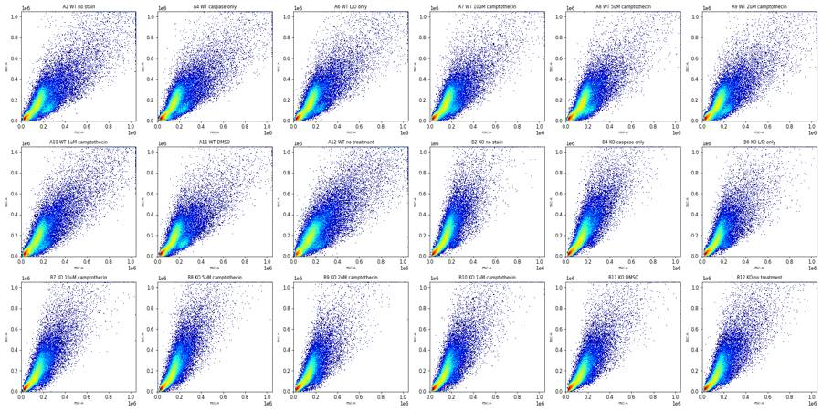
18
tool call · Read
{
"file_path": "/task/work/ov_time.png"
}19
tool output
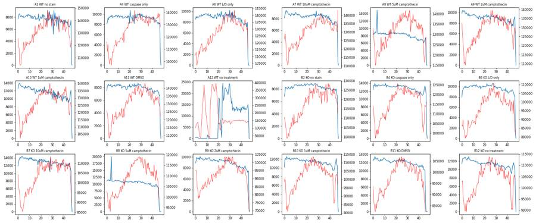
21
tool call · Read
{
"file_path": "/task/work/ov_fsca_fsch.png"
}22
tool output
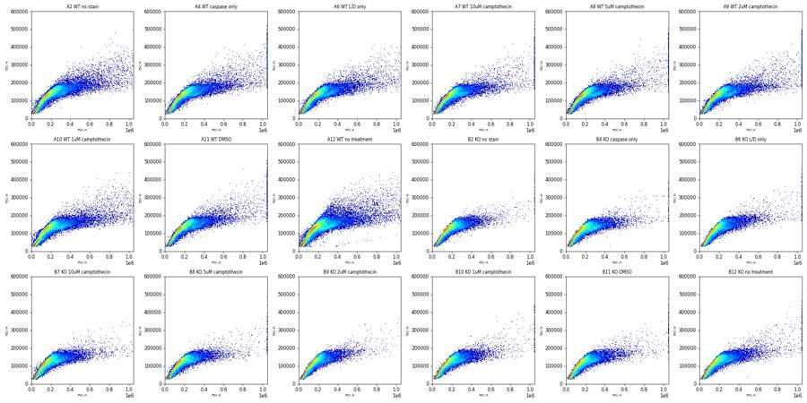
23
tool call · Read
{
"file_path": "/task/work/ov_bl1_rl3.png"
}24
tool output
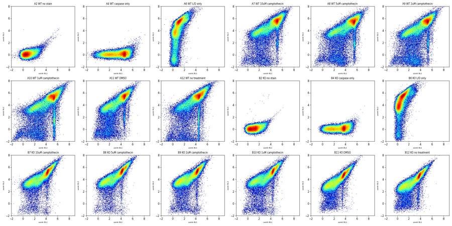
26
tool call · Bash
cat > /task/scripts/explore1.py <<'EOF'
import sys; sys.path.insert(0,'/task/scripts')
from common import *
import matplotlib; matplotlib.use('Agg'); import matplotlib.pyplot as plt
from matplotlib.colors import LogNorm
wells=['A2','A4','A6','A8','A11','A12','B2','B4','B6','B8','B11','B12']
fig,axs=plt.subplots(4,6,figsize=(26,17))
for i,w in enumerate(wells):
r=lay[lay.well==w].iloc[0]; s,df=get(r.file)
ax=axs.flat[2*i]
ax.hist2d(np.log10(df['FSC-A'].clip(1e3)),np.log10(df['SSC-A'].clip(1e3)),bins=200,norm=LogNorm(),cmap='jet',range=[[3.5,6.05],[3.5,6.05]])
ax.set_title(f'{w} {r["sample"]} log FSC/SSC',fontsize=9)
ax=axs.flat[2*i+1]
# BL1 vs RL3 colored only FSC>80k
d=df[(df['FSC-A']>80000)]
ax.hist2d(asinh(d['BL1-A']),asinh(d['RL3-A']),bins=200,norm=LogNorm(),cmap='jet',range=[[-2,9],[-2,8]])
ax.set_title(f'{w} BL1/RL3 FSC>80k',fontsize=9)
plt.tight_layout(); plt.savefig('/task/work/ex1.png',dpi=55)
EOF
cd /task && python3 scripts/explore1.py27
tool output
(Bash completed with no output)
28
tool call · Read
{
"file_path": "/task/work/ex1.png"
}29
tool output
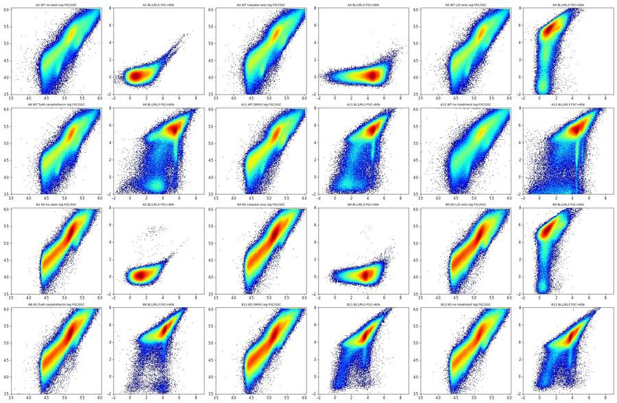
31
tool call · Bash
cat > /task/scripts/explore2.py <<'EOF'
import sys; sys.path.insert(0,'/task/scripts')
from common import *
import matplotlib; matplotlib.use('Agg'); import matplotlib.pyplot as plt
from matplotlib.colors import LogNorm
fig,axs=plt.subplots(3,6,figsize=(26,11))
for ax,(_,r) in zip(axs.flat,lay.iterrows()):
s,df=get(r.file)
d=df[(df['FSC-A']>80000)]
t=d.Time.values; rl=asinh(d['RL3-A']); bl=asinh(d['BL1-A'])
e=np.arange(0,48,1.0); idx=np.digitize(t,e)
lo=pd.Series(rl<3).groupby(idx).mean()
streak=pd.Series((rl<3)&(bl>4)).groupby(idx).mean()
rate=pd.Series(np.ones(len(t))).groupby(idx).sum()
ax.plot(e[lo.index-1],lo.values,label='RL3<3'); ax.plot(e[streak.index-1],streak.values,label='RL3<3 & BL1>4')
ax2=ax.twinx(); ax2.plot(e[rate.index-1],rate.values,'k:',lw=0.8)
ax.set_title(f'{r.well} {r["sample"]}',fontsize=9); ax.legend(fontsize=6)
plt.tight_layout(); plt.savefig('/task/work/ex2.png',dpi=55)
EOF
cd /task && python3 scripts/explore2.py32
tool output
(Bash completed with no output)
33
tool call · Read
{
"file_path": "/task/work/ex2.png"
}34
tool output
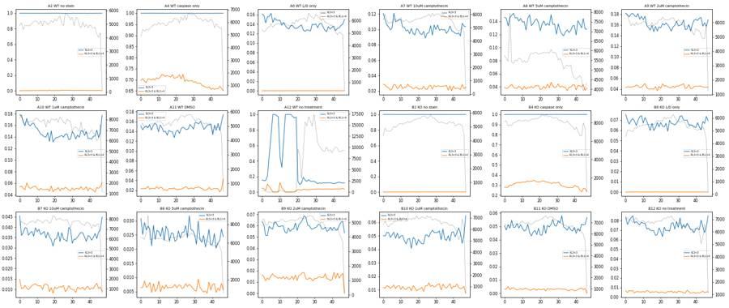
36
agent
A12 (WT no treatment) shows a clear clog: event rate near zero for the first ~20 s, then a burst. Next I'm working out where the live/dead boundary on Zombie NIR sits.
37
tool call · Bash
cat > /task/scripts/explore3.py <<'EOF'
import sys; sys.path.insert(0,'/task/scripts')
from common import *
import matplotlib; matplotlib.use('Agg'); import matplotlib.pyplot as plt
from matplotlib.colors import LogNorm
wells=['A2','A6','A11','A8','B2','B6','B11','B8']
fig,axs=plt.subplots(4,8,figsize=(32,16))
for j,w in enumerate(wells):
r=lay[lay.well==w].iloc[0]; s,df=get(r.file)
d=df[(df['FSC-A']>80000)&(df['FSC-A']<900000)]
d=d[(d['FSC-H']/d['FSC-A'])>0.45]
rl=asinh(d['RL3-A']); bl=asinh(d['BL1-A'])
ax=axs[0,j]; ax.hist(rl,bins=300,range=(-2,9),histtype='step'); ax.set_yscale('log'); ax.set_title(f'{w} {r["sample"]} RL3',fontsize=9)
ax=axs[1,j]
for lo,hi,c in [(-5,2.5,'b'),(2.5,4.5,'g'),(4.5,10,'r')]:
m=(rl>=lo)&(rl<hi)
ax.scatter(np.log10(d['FSC-A'][m][:5000]),np.log10(d['SSC-A'][m].clip(1e3)[:5000]),s=1,c=c,alpha=0.3,label=f'{lo}-{hi} n={m.sum()}')
ax.legend(fontsize=7,markerscale=8); ax.set_xlim(4.8,6.05); ax.set_ylim(3.5,6.05)
ax=axs[2,j]; ax.hist2d(np.log10(d['FSC-A']),rl,bins=200,norm=LogNorm(),cmap='jet',range=[[4.8,6.05],[-2,8]]); ax.set_title('logFSC vs RL3')
ax=axs[3,j]; ax.hist2d(np.log10(d['SSC-A'].clip(1e3)),rl,bins=200,norm=LogNorm(),cmap='jet',range=[[3.5,6.05],[-2,8]]); ax.set_title('logSSC vs RL3')
plt.tight_layout(); plt.savefig('/task/work/ex3.png',dpi=50)
EOF
cd /task && python3 scripts/explore3.py38
tool output
(Bash completed with no output)
39
tool call · Read
{
"file_path": "/task/work/ex3.png"
}40
tool output
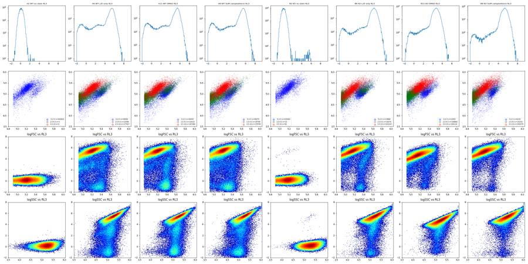
42
tool call · Bash
cat > /task/scripts/explore4.py <<'EOF'
import sys; sys.path.insert(0,'/task/scripts')
from common import *
import matplotlib; matplotlib.use('Agg'); import matplotlib.pyplot as plt
from matplotlib.colors import LogNorm
wells=['A4','A6','A11','A8','B4','B6','B11','B8']
fig,axs=plt.subplots(4,8,figsize=(32,16))
for j,w in enumerate(wells):
r=lay[lay.well==w].iloc[0]; s,df=get(r.file)
d=df[(df['FSC-A']>80000)&(df['FSC-A']<900000)]
d=d[(d['FSC-H']/d['FSC-A'])>0.45]
rl=asinh(d['RL3-A']); bl=asinh(d['BL1-A']); lf=np.log10(d['FSC-A']); ls=np.log10(d['SSC-A'].clip(1e3))
live_sc=(lf>5.25)&(ls<lf-0.2)
ax=axs[0,j]; ax.hist2d(lf,ls,bins=200,norm=LogNorm(),cmap='jet',range=[[4.8,6.05],[3.5,6.05]]); ax.plot([5.25,6],[5.05,5.8],'k-'); ax.axvline(5.25,c='k'); ax.set_title(f'{w} {r["sample"]}',fontsize=9)
ax=axs[1,j]; ax.hist2d(bl[live_sc],rl[live_sc],bins=200,norm=LogNorm(),cmap='jet',range=[[-2,9],[-2,8]]); ax.set_title(f'live-scatter n={live_sc.sum()} BL1 vs RL3',fontsize=9)
ax=axs[2,j]; ax.hist2d(bl[~live_sc],rl[~live_sc],bins=200,norm=LogNorm(),cmap='jet',range=[[-2,9],[-2,8]]); ax.set_title(f'other-scatter n={(~live_sc).sum()}',fontsize=9)
ax=axs[3,j];
m=(rl<3)
ax.hist(bl[m&live_sc],bins=200,range=(-2,9),histtype='step',label='RL3<3 live sc'); ax.hist(bl[m&~live_sc],bins=200,range=(-2,9),histtype='step',label='RL3<3 other sc'); ax.hist(bl[~m],bins=200,range=(-2,9),histtype='step',label='RL3>3'); ax.set_yscale('log'); ax.legend(fontsize=7)
plt.tight_layout(); plt.savefig('/task/work/ex4.png',dpi=50)
EOF
cd /task && python3 scripts/explore4.py43
tool output
(Bash completed with no output)
44
tool call · Read
{
"file_path": "/task/work/ex4.png"
}45
tool output
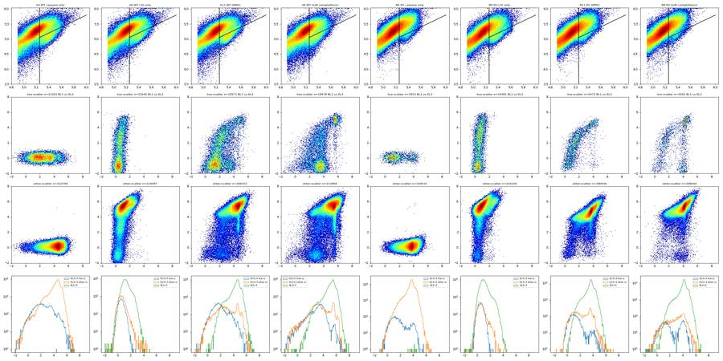
47
tool call · Bash
cat > /task/scripts/explore5.py <<'EOF'
import sys; sys.path.insert(0,'/task/scripts')
from common import *
pd.set_option('display.width',250)
for w,(blo,bhi) in [('A8',(5.2,5.8)),('A11',(4.4,4.9)),('B11',(3.5,4.0)),('A12',(4.3,4.8))]:
r=lay[lay.well==w].iloc[0]; s,df=get(r.file)
df=df.copy()
t=df.Time.values
df['dtprev']=np.r_[np.inf,np.diff(t)]; df['dtnext']=np.r_[np.diff(t),np.inf]
df['dtmin']=np.minimum(df.dtprev,df.dtnext)
d=df[(df['FSC-A']>80000)&(df['FSC-A']<900000)]
rl=asinh(d['RL3-A']); bl=asinh(d['BL1-A']); lf=np.log10(d['FSC-A']); ls=np.log10(d['SSC-A'].clip(1e3))
live_sc=(lf>5.25)&(ls<lf-0.2)
groups={'streak':(~live_sc)&(rl<2.5)&(bl>blo)&(bl<bhi),'dead_same_bl1':(rl>4.5)&(bl>blo)&(bl<bhi),'live_lowRL3':live_sc&(rl<2.5),'all':rl>-99}
out=[]
for g,m in groups.items():
x=d[m]
out.append(dict(g=g,n=m.sum(),FSCA=x['FSC-A'].median(),SSCA=x['SSC-A'].median(),HA=(x['FSC-H']/x['FSC-A']).median(),FSCW=x['FSC-W'].median(),SSCW=x['SSC-W'].median(),
frac_dt0=(x.dtmin<=0.0).mean(), frac_dtle1ms=(x.dtmin<=0.001).mean(), RL3med=x['RL3-A'].median()))
print(w, r['sample']); print(pd.DataFrame(out))
EOF
cd /task && python3 scripts/explore5.py48
tool output
A8 WT 5uM camptothecin
g n FSCA ... frac_dt0 frac_dtle1ms RL3med
0 streak 2419 108817.0 ... 0.995453 0.999587 279.0
1 dead_same_bl1 83401 162578.0 ... 0.998106 0.999556 18124.0
2 live_lowRL3 12702 230579.5 ... 0.999134 0.999685 -95.0
3 all 253301 162746.0 ... 0.998069 0.999570 16012.0
[4 rows x 10 columns]
A11 WT DMSO
g n FSCA ... frac_dt0 frac_dtle1ms RL3med
0 streak 1779 123761.0 ... 0.995503 0.998876 377.0
1 dead_same_bl1 78147 160398.0 ... 0.998464 0.999731 17031.0
2 live_lowRL3 16074 243598.0 ... 0.998756 0.999689 -60.0
3 all 244919 166220.0 ... 0.998257 0.999637 14624.0
[4 rows x 10 columns]
B11 KO DMSO
g n FSCA ... frac_dt0 frac_dtle1ms RL3med
0 streak 1399 116208.0 ... 0.999285 1.000000 414.0
1 dead_same_bl1 94520 151877.5 ... 0.999894 0.999979 9482.0
2 live_lowRL3 3494 221393.0 ... 0.999714 1.000000 86.0
3 all 316947 147157.0 ... 0.999867 0.999987 8056.0
[4 rows x 10 columns]
A12 WT no treatment
g n FSCA ... frac_dt0 frac_dtle1ms RL3med
0 streak 4149 113102.0 ... 0.997108 0.999036 254.0
1 dead_same_bl1 77779 162183.0 ... 0.997261 0.998637 17419.0
2 live_lowRL3 14920 251312.5 ... 0.995174 0.997051 -256.0
3 all 286104 174551.0 ... 0.997061 0.998354 16338.0
[4 rows x 10 columns]50
tool call · Bash
sed -i 's/print(pd.DataFrame(out))/print(pd.DataFrame(out).drop(columns=["frac_dt0","frac_dtle1ms"]).to_string())/' scripts/explore5.py && python3 scripts/explore5.py
51
tool output
A8 WT 5uM camptothecin
g n FSCA SSCA HA FSCW SSCW RL3med
0 streak 2419 108817.0 70737.0 0.839007 85.0 82.0 279.0
1 dead_same_bl1 83401 162578.0 190623.0 0.794313 91.0 90.0 18124.0
2 live_lowRL3 12702 230579.5 105363.5 0.692425 99.0 92.0 -95.0
3 all 253301 162746.0 177835.0 0.782076 92.0 90.0 16012.0
A11 WT DMSO
g n FSCA SSCA HA FSCW SSCW RL3med
0 streak 1779 123761.0 96211.0 0.821314 87.0 84.0 377.0
1 dead_same_bl1 78147 160398.0 190670.0 0.799115 90.0 89.0 17031.0
2 live_lowRL3 16074 243598.0 116457.5 0.661665 101.0 94.0 -60.0
3 all 244919 166220.0 179617.0 0.769335 92.0 91.0 14624.0
B11 KO DMSO
g n FSCA SSCA HA FSCW SSCW RL3med
0 streak 1399 116208.0 108559.0 0.839030 85.0 83.0 414.0
1 dead_same_bl1 94520 151877.5 201673.0 0.802308 89.0 89.0 9482.0
2 live_lowRL3 3494 221393.0 111850.5 0.721155 98.0 92.0 86.0
3 all 316947 147157.0 180983.0 0.785843 90.0 90.0 8056.0
A12 WT no treatment
g n FSCA SSCA HA FSCW SSCW RL3med
0 streak 4149 113102.0 75917.0 0.829352 86.0 83.0 254.0
1 dead_same_bl1 77779 162183.0 206420.0 0.802557 91.0 90.0 17419.0
2 live_lowRL3 14920 251312.5 111437.0 0.689042 101.0 93.0 -256.0
3 all 286104 174551.0 206317.0 0.756662 95.0 93.0 16338.053
thinking
The bright-caspase, Zombie-low streak is small, low-scatter debris, probably free nuclei, so I'm adding a scatter restriction to the Live gate. I'm plotting FSC against Zombie across all wells to set it.
54
tool call · Bash
cat > /task/scripts/explore6.py <<'EOF'
import sys; sys.path.insert(0,'/task/scripts')
from common import *
import matplotlib; matplotlib.use('Agg'); import matplotlib.pyplot as plt
from matplotlib.colors import LogNorm
fig,axs=plt.subplots(3,6,figsize=(26,12))
for ax,(_,r) in zip(axs.flat,lay.iterrows()):
s,df=get(r.file)
d=df[(df['FSC-A']>30000)&(df['FSC-A']<1e6)&(df['SSC-A']<1e6)]
ax.hist2d(d['FSC-A'],asinh(d['RL3-A']),bins=250,norm=LogNorm(),cmap='jet',range=[[0,6e5],[-2,8]])
ax.set_title(f'{r.well} {r["sample"]} FSC-A vs asinh RL3',fontsize=9)
for y in [asinh(1000),asinh(2000)]: ax.axhline(y,c='k',lw=0.5)
ax.axvline(150000,c='k',lw=0.5)
plt.tight_layout(); plt.savefig('/task/work/ex6.png',dpi=55)
fig,axs=plt.subplots(3,6,figsize=(26,12))
for ax,(_,r) in zip(axs.flat,lay.iterrows()):
s,df=get(r.file)
d=df[(df['FSC-A']>30000)&(df['FSC-A']<1e6)&(df['SSC-A']<1e6)]
d=d[d['RL3-A']<1000]
ax.hist2d(d['FSC-A'],d['SSC-A'],bins=250,norm=LogNorm(),cmap='jet',range=[[0,6e5],[0,6e5]])
ax.set_title(f'{r.well} {r["sample"]} RL3<1000 FSC/SSC',fontsize=9)
plt.tight_layout(); plt.savefig('/task/work/ex6b.png',dpi=55)
EOF
cd /task && python3 scripts/explore6.py55
tool output
(Bash completed with no output)
56
tool call · Read
{
"file_path": "/task/work/ex6.png"
}57
tool output
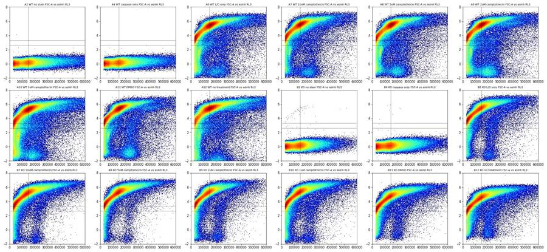
58
tool call · Read
{
"file_path": "/task/work/ex6b.png"
}59
tool output
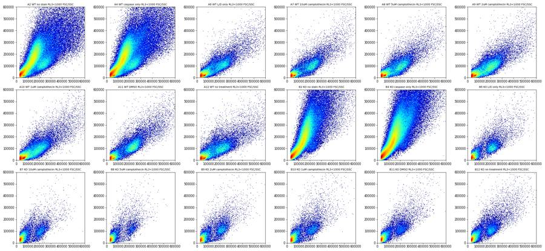
61
tool call · Bash
cat > /task/scripts/explore7.py <<'EOF'
import sys; sys.path.insert(0,'/task/scripts')
from common import *
import matplotlib; matplotlib.use('Agg'); import matplotlib.pyplot as plt
from matplotlib.colors import LogNorm
fig,axs=plt.subplots(3,6,figsize=(26,12))
for ax,(_,r) in zip(axs.flat,lay.iterrows()):
s,df=get(r.file)
d=df[(df['FSC-A']>30000)&(df['FSC-A']<1e6)&(df['SSC-A']<1e6)&(df['RL3-A']<1500)]
ax.hist2d(d['FSC-A'],asinh(d['BL1-A']),bins=250,norm=LogNorm(),cmap='jet',range=[[0,6e5],[-2,9]])
ax.set_title(f'{r.well} {r["sample"]} RL3<1500: FSC-A vs asinh BL1',fontsize=9)
ax.axvline(140000,c='k',lw=0.5)
plt.tight_layout(); plt.savefig('/task/work/ex7.png',dpi=55)
EOF
cd /task && python3 scripts/explore7.py62
tool output
(Bash completed with no output)
63
tool call · Read
{
"file_path": "/task/work/ex7.png"
}64
tool output
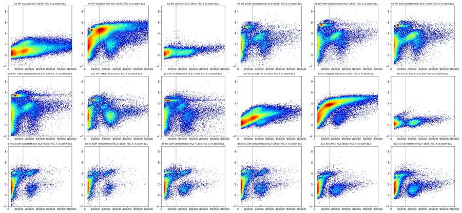
66
tool call · Bash
cat > /task/scripts/explore8.py <<'EOF'
import sys; sys.path.insert(0,'/task/scripts')
from common import *
import matplotlib; matplotlib.use('Agg'); import matplotlib.pyplot as plt
fig,axs=plt.subplots(1,3,figsize=(24,7))
cols=plt.cm.viridis(np.linspace(0,1,6))
groups={'WT':['A11','A12','A10','A9','A8','A7'],'KO':['B11','B12','B10','B9','B8','B7']}
for ax,(g,ws) in zip(axs,groups.items()):
for c,w in zip(cols,ws):
r=lay[lay.well==w].iloc[0]; s,df=get(r.file)
d=df[(df['FSC-A']>150000)&(df['FSC-A']<350000)&(df['SSC-A']<250000)&(df['RL3-A']<1500)]
ax.hist(asinh(d['BL1-A']),bins=150,range=(-2,8),histtype='step',color=c,density=True,label=f'{w} {r["sample"]} n={len(d)}')
ax.legend(fontsize=8); ax.set_title(g)
ax=axs[2]
for w,c in zip(['A2','A4','A6','B2','B4','B6'],['k','g','r','gray','lime','salmon']):
r=lay[lay.well==w].iloc[0]; s,df=get(r.file)
d=df[(df['FSC-A']>150000)&(df['FSC-A']<350000)&(df['SSC-A']<250000)&(df['RL3-A']<1500)]
ax.hist(asinh(d['BL1-A']),bins=150,range=(-2,8),histtype='step',color=c,density=True,label=f'{w} {r["sample"]} n={len(d)}')
ax.legend(fontsize=8)
for a in axs:
for x in [2,2.5,3]: a.axvline(x,c='k',lw=0.4)
plt.tight_layout(); plt.savefig('/task/work/ex8.png',dpi=55)
EOF
cd /task && python3 scripts/explore8.py67
tool output
(Bash completed with no output)
68
tool call · Read
{
"file_path": "/task/work/ex8.png"
}69
tool output
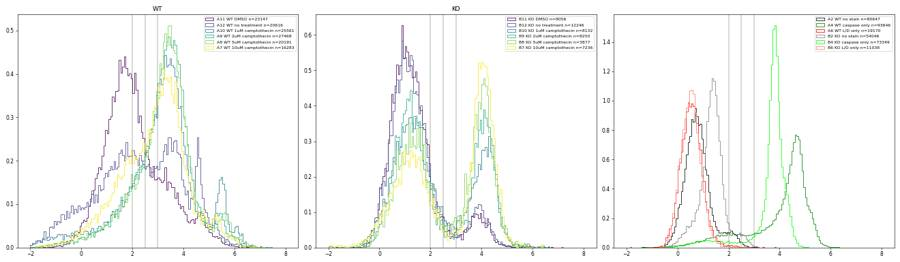
71
thinking
KO live cells split into caspase-dim and caspase-bright peaks with a valley near BL1 ≈ 1500, while WT cells shift as a whole. Next I'll confirm the bright live cells are real cells rather than nuclei and locate the Zombie valley.
72
tool call · Bash
cat > /task/scripts/explore9.py <<'EOF'
import sys; sys.path.insert(0,'/task/scripts')
from common import *
import matplotlib; matplotlib.use('Agg'); import matplotlib.pyplot as plt
from matplotlib.colors import LogNorm
ws=['A11','A8','A7','B11','B8','B7']
fig,axs=plt.subplots(4,6,figsize=(26,16))
for j,w in enumerate(ws):
r=lay[lay.well==w].iloc[0]; s,df=get(r.file)
d=df[(df['FSC-A']>70000)&(df['FSC-A']<1e6)&(df['SSC-A']<1e6)]
ratio=d['FSC-H']/d['FSC-A']
sc=(d['FSC-A']>150000)&(d['FSC-A']<450000)
ax=axs[0,j]; ax.hist(asinh(d['RL3-A'][sc]),bins=200,range=(-2,8),histtype='step'); ax.set_yscale('log'); ax.set_title(f'{w} {r["sample"]} RL3, FSC150-450k',fontsize=9)
for x in [3,3.28,3.5,4]: ax.axvline(x,c='k',lw=0.4)
lv=sc&(d['RL3-A']<2000)
ax=axs[1,j]; ax.hist2d(d['SSC-A'][lv],asinh(d['BL1-A'][lv]),bins=200,norm=LogNorm(),cmap='jet',range=[[0,5e5],[-2,8]]); ax.set_title('live cand: SSC-A vs BL1',fontsize=9)
ax=axs[2,j]; ax.hist2d(d['FSC-A'][lv],d['FSC-H'][lv],bins=200,norm=LogNorm(),cmap='jet',range=[[1e5,5e5],[0,3e5]]); ax.set_title('live cand: FSC-A vs FSC-H',fontsize=9)
ax=axs[3,j]; ax.hist2d(d['FSC-A'],d['FSC-H'],bins=200,norm=LogNorm(),cmap='jet',range=[[0,1e6],[0,4e5]]); ax.set_title('all >70k: FSC-A vs FSC-H',fontsize=9)
plt.tight_layout(); plt.savefig('/task/work/ex9.png',dpi=55)
EOF
cd /task && python3 scripts/explore9.py73
tool output
(Bash completed with no output)
74
tool call · Read
{
"file_path": "/task/work/ex9.png"
}75
tool output
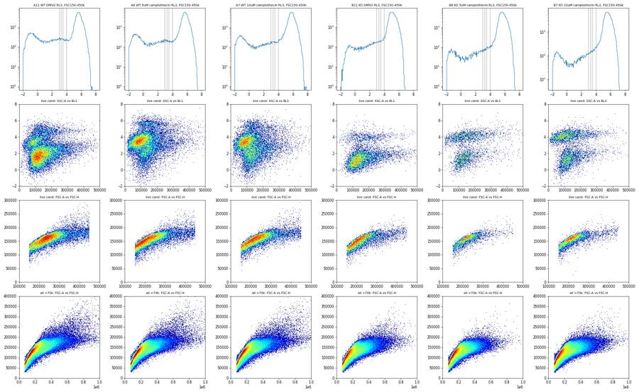
77
tool call · Bash
cat > /task/scripts/explore10.py <<'EOF'
import sys; sys.path.insert(0,'/task/scripts')
from common import *
import matplotlib; matplotlib.use('Agg'); import matplotlib.pyplot as plt
from matplotlib.colors import LogNorm
ds=[]
for _,r in lay.iterrows():
s,df=get(r.file); ds.append(df.sample(40000,random_state=1).assign(well=r.well))
P=pd.concat(ds)
fig,axs=plt.subplots(1,3,figsize=(27,9))
ax=axs[0]; ax.hist2d(P['FSC-A'],P['SSC-A'],bins=300,norm=LogNorm(),cmap='jet',range=[[0,1.05e6],[0,1.05e6]]); ax.grid(alpha=0.3); ax.set_title('pooled FSC-A vs SSC-A')
ax=axs[1]; ax.hist2d(P['FSC-A'],P['FSC-H'],bins=300,norm=LogNorm(),cmap='jet',range=[[0,1.05e6],[0,5e5]]); ax.grid(alpha=0.3); ax.set_title('pooled FSC-A vs FSC-H')
ax=axs[2]; ax.hist2d(P['FSC-A'],P['FSC-H']/P['FSC-A'],bins=300,norm=LogNorm(),cmap='jet',range=[[0,1.05e6],[0,1.5]]); ax.grid(alpha=0.3); ax.set_title('pooled FSC-A vs ratio')
plt.tight_layout(); plt.savefig('/task/work/ex10.png',dpi=55)
b=np.arange(50000,800001,50000)
P['bin']=pd.cut(P['FSC-A'],b)
print(P.groupby('bin')[['FSC-H']].apply(lambda x: pd.Series(np.percentile(x['FSC-H'],[1,5,25,50,75,95,99]),index=[1,5,25,50,75,95,99])).round(0))
print(P.groupby('bin').size())
EOF
cd /task && python3 scripts/explore10.py78
tool output
/task/scripts/explore10.py:16: FutureWarning: The default of observed=False is deprecated and will be changed to True in a future version of pandas. Pass observed=False to retain current behavior or observed=True to adopt the future default and silence this warning.
print(P.groupby('bin')[['FSC-H']].apply(lambda x: pd.Series(np.percentile(x['FSC-H'],[1,5,25,50,75,95,99]),index=[1,5,25,50,75,95,99])).round(0))
/task/scripts/explore10.py:17: FutureWarning: The default of observed=False is deprecated and will be changed to True in a future version of pandas. Pass observed=False to retain current behavior or observed=True to adopt the future default and silence this warning.
print(P.groupby('bin').size())
1 5 25 ... 75 95 99
bin ...
(50000, 100000] 36668.0 46516.0 55788.0 ... 76441.0 88871.0 94188.0
(100000, 150000] 62005.0 81226.0 98235.0 ... 116429.0 124725.0 128980.0
(150000, 200000] 83054.0 103363.0 123185.0 ... 137182.0 146768.0 153267.0
(200000, 250000] 93524.0 107751.0 130587.0 ... 153932.0 167096.0 175574.0
(250000, 300000] 102392.0 114491.0 131114.0 ... 163847.0 179194.0 193928.0
(300000, 350000] 108365.0 121017.0 135567.0 ... 166528.0 187940.0 218623.0
(350000, 400000] 112784.0 126102.0 142875.0 ... 172176.0 195963.0 230674.0
(400000, 450000] 118447.0 130982.0 149472.0 ... 178830.0 207852.0 247722.0
(450000, 500000] 123122.0 133443.0 153238.0 ... 186141.0 219263.0 254000.0
(500000, 550000] 126266.0 137734.0 158681.0 ... 193024.0 235528.0 281780.0
(550000, 600000] 131288.0 142677.0 164248.0 ... 200857.0 252728.0 289332.0
(600000, 650000] 133673.0 146444.0 167576.0 ... 208350.0 268458.0 313624.0
(650000, 700000] 134938.0 146558.0 171811.0 ... 219902.0 279380.0 325428.0
(700000, 750000] 137536.0 152246.0 176946.0 ... 232258.0 295024.0 337389.0
(750000, 800000] 138641.0 156088.0 178668.0 ... 238735.0 314851.0 367983.0
[15 rows x 7 columns]
bin
(50000, 100000] 145758
(100000, 150000] 147259
(150000, 200000] 119062
(200000, 250000] 49111
(250000, 300000] 27152
(300000, 350000] 17082
(350000, 400000] 11263
(400000, 450000] 7438
(450000, 500000] 5424
(500000, 550000] 3763
(550000, 600000] 2689
(600000, 650000] 2068
(650000, 700000] 1599
(700000, 750000] 1254
(750000, 800000] 1034
dtype: int6479
tool call · Read
{
"file_path": "/task/work/ex10.png"
}80
tool output
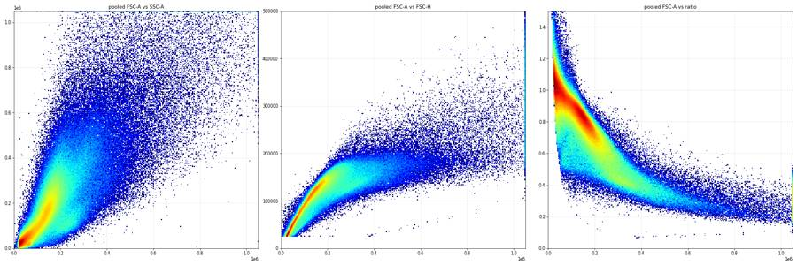
82
tool call · Bash
cat > /task/scripts/explore11.py <<'EOF'
import sys; sys.path.insert(0,'/task/scripts')
from common import *
import matplotlib; matplotlib.use('Agg'); import matplotlib.pyplot as plt
from matplotlib.colors import LogNorm, Path
from matplotlib.path import Path
sing=Path([(60000,30000),(130000,70000),(200000,100000),(300000,120000),(450000,140000),(450000,260000),(250000,220000),(150000,170000),(60000,90000)])
fig,axs=plt.subplots(3,6,figsize=(26,12))
for ax,(_,r) in zip(axs.flat,lay.iterrows()):
s,df=get(r.file)
d=df[(df['FSC-A']>70000)&(df['FSC-A']<700000)&(df['SSC-A']<1e6)]
m=sing.contains_points(d[['FSC-A','FSC-H']].values)
d=d[m]; d=d[(d['FSC-A']>140000)&(d['FSC-A']<450000)]
ax.hist2d(asinh(d['BL1-A']),asinh(d['RL3-A']),bins=200,norm=LogNorm(),cmap='jet',range=[[-2,8],[-2,8]])
ax.axhline(asinh(1000),c='k',lw=0.5); ax.axhline(asinh(2000),c='k',lw=0.5); ax.axvline(asinh(1500),c='k',lw=0.5)
ax.set_title(f'{r.well} {r["sample"]} sing, FSC140-450k',fontsize=9)
plt.tight_layout(); plt.savefig('/task/work/ex11.png',dpi=55)
EOF
cd /task && python3 scripts/explore11.py83
tool output (error)
Exit code 1
Traceback (most recent call last):
File "/task/scripts/explore11.py", line 4, in <module>
from matplotlib.colors import LogNorm, Path
ImportError: cannot import name 'Path' from 'matplotlib.colors' (/usr/local/lib/python3.12/site-packages/matplotlib/colors.py)84
tool call · Bash
sed -i 's/from matplotlib.colors import LogNorm, Path/from matplotlib.colors import LogNorm/' scripts/explore11.py && python3 scripts/explore11.py
85
tool output
(Bash completed with no output)
86
tool call · Read
{
"file_path": "/task/work/ex11.png"
}87
tool output
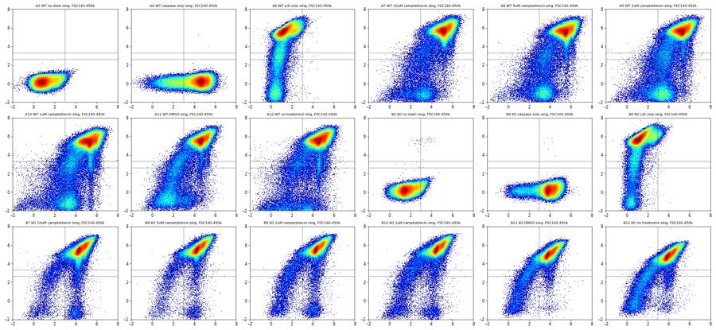
89
agent
Picking the caspase and Zombie thresholds. I'll test how sensitive %Casp+ is to each cut-off before fixing them.
90
tool call · Bash
cat > /task/scripts/sens.py <<'EOF'
import sys; sys.path.insert(0,'/task/scripts')
from common import *
from matplotlib.path import Path
cells=Path([(70000,5000),(700000,5000),(700000,1000000),(70000,1000000)])
sing=Path([(60000,30000),(130000,70000),(200000,100000),(300000,120000),(450000,140000),(450000,260000),(250000,220000),(150000,170000),(60000,90000)])
rows=[]
for _,r in lay.iterrows():
s,df=get(r.file)
c=cells.contains_points(df[['FSC-A','SSC-A']].values)
d=df[c]; sg=sing.contains_points(d[['FSC-A','FSC-H']].values); d=d[sg]
row=dict(well=r.well,sample=r['sample'],cells=c.sum(),sing=len(d))
for rt in [500,1000,1500,2000]:
L=d[(d['FSC-A']>140000)&(d['FSC-A']<450000)&(d['RL3-A']<rt)]
row[f'live{rt}']=len(L)
for bt in [700,1000,1500,2000,3000]:
row[f'r{rt}_b{bt}']=round(100*(L['BL1-A']>=bt).mean(),1)
rows.append(row)
D=pd.DataFrame(rows)
pd.set_option('display.width',300); pd.set_option('display.max_columns',50)
print(D[['well','sample','cells','sing','live500','live1000','live1500','live2000']].to_string())
print(D[['well','sample']+[f'r1000_b{b}' for b in [700,1000,1500,2000,3000]]+[f'r{r}_b1500' for r in [500,1000,1500,2000]]].to_string())
EOF
cd /task && python3 scripts/sens.py91
tool output
well sample cells sing live500 live1000 live1500 live2000 0 A2 WT no stain 239296 221996 142923 142925 142925 142925 1 A4 WT caspase only 289648 271749 170991 170992 170992 170992 2 A6 WT L/D only 271236 255828 17321 20347 22582 24196 3 A7 WT 10uM camptothecin 270949 256934 15499 17587 18964 20088 4 A8 WT 5uM camptothecin 264397 252550 19227 21905 23703 25077 5 A9 WT 2uM camptothecin 285473 270356 26383 29545 31750 33399 6 A10 WT 1uM camptothecin 361140 334912 23407 27280 30176 32240 7 A11 WT DMSO 254406 241097 21918 25063 27142 28705 8 A12 WT no treatment 292539 267770 18863 21846 24003 25578 9 B2 KO no stain 260325 253127 146432 146437 146440 146443 10 B4 KO caspase only 400549 381579 208000 208004 208004 208004 11 B6 KO L/D only 272551 260646 9412 11444 12863 14013 12 B7 KO 10uM camptothecin 380360 358794 5950 7280 8282 9104 13 B8 KO 5uM camptothecin 313515 300697 3349 4121 4687 5120 14 B9 KO 2uM camptothecin 250090 241371 6992 8499 9532 10309 15 B10 KO 1uM camptothecin 330914 316244 7154 8741 9926 10886 16 B11 KO DMSO 337690 319487 6448 8490 9904 10958 17 B12 KO no treatment 330804 313160 10452 13417 15291 16606 well sample r1000_b700 r1000_b1000 r1000_b1500 r1000_b2000 r1000_b3000 r500_b1500 r1000_b1500 r1500_b1500 r2000_b1500 0 A2 WT no stain 7.4 2.8 0.6 0.1 0.0 0.6 0.6 0.6 0.6 1 A4 WT caspase only 92.1 89.9 87.3 85.2 81.0 87.3 87.3 87.3 87.3 2 A6 WT L/D only 0.5 0.2 0.1 0.1 0.0 0.1 0.1 0.1 0.1 3 A7 WT 10uM camptothecin 70.0 61.7 49.6 38.9 24.6 48.2 49.6 50.8 52.0 4 A8 WT 5uM camptothecin 81.9 74.6 62.5 50.4 31.6 61.5 62.5 63.7 64.9 5 A9 WT 2uM camptothecin 81.6 74.4 62.6 50.7 32.4 61.5 62.6 63.6 64.4 6 A10 WT 1uM camptothecin 77.4 69.9 58.1 47.0 30.5 55.9 58.1 59.9 61.4 7 A11 WT DMSO 40.0 30.6 22.8 17.8 11.9 21.4 22.8 24.0 25.1 8 A12 WT no treatment 54.1 47.3 39.8 33.8 24.3 38.0 39.8 41.1 42.3 9 B2 KO no stain 18.5 10.8 4.0 1.3 0.1 4.0 4.0 4.0 4.0 10 B4 KO caspase only 96.6 95.8 94.2 91.6 75.4 94.2 94.2 94.2 94.2 11 B6 KO L/D only 0.5 0.2 0.1 0.0 0.0 0.0 0.1 0.1 0.1 12 B7 KO 10uM camptothecin 57.3 55.3 53.8 51.7 44.5 55.4 53.8 53.3 52.9 13 B8 KO 5uM camptothecin 55.9 53.5 51.0 48.3 39.9 53.0 51.0 49.8 49.1 14 B9 KO 2uM camptothecin 43.5 41.3 39.6 37.7 32.2 41.7 39.6 38.9 38.8 15 B10 KO 1uM camptothecin 42.7 39.4 36.8 34.3 28.8 37.6 36.8 36.7 36.9 16 B11 KO DMSO 15.1 12.9 11.5 10.7 8.0 9.3 11.5 13.1 14.2 17 B12 KO no treatment 18.5 15.1 13.2 12.0 9.3 10.8 13.2 14.4 15.4
93
thinking
The Zombie cut-off barely changes the results, but the caspase cut-off shifts the WT camptothecin values a lot. Next I'm checking the A12 clog and an odd BL1 signal in the KO no-stain control (B2).
94
tool call · Bash
cat > /task/scripts/a12.py <<'EOF'
import sys; sys.path.insert(0,'/task/scripts')
from common import *
from matplotlib.path import Path
cells=Path([(70000,5000),(700000,5000),(700000,1000000),(70000,1000000)])
sing=Path([(60000,30000),(130000,70000),(200000,100000),(300000,120000),(450000,140000),(450000,260000),(250000,220000),(150000,170000),(60000,90000)])
def metr(df):
c=cells.contains_points(df[['FSC-A','SSC-A']].values); d=df[c]
d=d[sing.contains_points(d[['FSC-A','FSC-H']].values)]
L=d[(d['FSC-A']>140000)&(d['FSC-A']<450000)&(d['RL3-A']<1000)]
return dict(n=len(df),cells=len(d),live=len(L),pct_live=round(100*len(L)/len(d),2),casp=round(100*(L['BL1-A']>=1500).mean(),1),medBL1live=L['BL1-A'].median(),fscmed=df['FSC-A'].median())
for w in ['A12','A11','B12','B2']:
r=lay[lay.well==w].iloc[0]; s,df=get(r.file)
t=df.Time
print(w,r['sample'])
for lo,hi in [(0,3),(3,21),(21,25),(25,48),(0,48),(21,48)]:
print(' ',lo,hi,metr(df[(t>=lo)&(t<hi)]))
# event rate per second A12
r=lay[lay.well=='A12'].iloc[0]; s,df=get(r.file)
print(np.histogram(df.Time,bins=np.arange(0,49,1))[0])
EOF
cd /task && python3 scripts/a12.py95
tool output
A12 WT no treatment
0 3 {'n': 1036, 'cells': 709, 'live': 56, 'pct_live': 7.9, 'casp': 46.4, 'medBL1live': 1360.0, 'fscmed': 125315.5}
3 21 {'n': 15448, 'cells': 9741, 'live': 879, 'pct_live': 9.02, 'casp': 38.0, 'medBL1live': 690.0, 'fscmed': 128608.0}
21 25 {'n': 49936, 'cells': 33296, 'live': 3189, 'pct_live': 9.58, 'casp': 34.7, 'medBL1live': 634.0, 'fscmed': 136678.5}
25 48 {'n': 342654, 'cells': 224024, 'live': 17722, 'pct_live': 7.91, 'casp': 40.7, 'medBL1live': 923.5, 'fscmed': 145514.0}
0 48 {'n': 409074, 'cells': 267770, 'live': 21846, 'pct_live': 8.16, 'casp': 39.8, 'medBL1live': 868.0, 'fscmed': 143690.0}
21 48 {'n': 392590, 'cells': 257320, 'live': 20911, 'pct_live': 8.13, 'casp': 39.8, 'medBL1live': 873.0, 'fscmed': 144324.0}
A11 WT DMSO
0 3 {'n': 24573, 'cells': 15516, 'live': 1500, 'pct_live': 9.67, 'casp': 23.8, 'medBL1live': 504.5, 'fscmed': 118038.0}
3 21 {'n': 147400, 'cells': 92071, 'live': 9273, 'pct_live': 10.07, 'casp': 22.7, 'medBL1live': 536.0, 'fscmed': 124223.5}
21 25 {'n': 33138, 'cells': 21697, 'live': 2223, 'pct_live': 10.25, 'casp': 23.8, 'medBL1live': 519.0, 'fscmed': 136488.0}
25 48 {'n': 172109, 'cells': 111813, 'live': 12067, 'pct_live': 10.79, 'casp': 22.5, 'medBL1live': 528.0, 'fscmed': 136660.0}
0 48 {'n': 377220, 'cells': 241097, 'live': 25063, 'pct_live': 10.4, 'casp': 22.8, 'medBL1live': 529.0, 'fscmed': 130591.5}
21 48 {'n': 205247, 'cells': 133510, 'live': 14290, 'pct_live': 10.7, 'casp': 22.7, 'medBL1live': 526.5, 'fscmed': 136624.0}
B12 KO no treatment
0 3 {'n': 37338, 'cells': 21691, 'live': 976, 'pct_live': 4.5, 'casp': 13.0, 'medBL1live': 236.0, 'fscmed': 96388.5}
3 21 {'n': 214678, 'cells': 122501, 'live': 5239, 'pct_live': 4.28, 'casp': 13.5, 'medBL1live': 250.0, 'fscmed': 99805.0}
21 25 {'n': 46368, 'cells': 27852, 'live': 1128, 'pct_live': 4.05, 'casp': 12.1, 'medBL1live': 262.5, 'fscmed': 111334.0}
25 48 {'n': 239839, 'cells': 141116, 'live': 6074, 'pct_live': 4.3, 'casp': 13.2, 'medBL1live': 250.5, 'fscmed': 106183.0}
0 48 {'n': 538223, 'cells': 313160, 'live': 13417, 'pct_live': 4.28, 'casp': 13.2, 'medBL1live': 250.0, 'fscmed': 103313.0}
21 48 {'n': 286207, 'cells': 168968, 'live': 7202, 'pct_live': 4.26, 'casp': 13.0, 'medBL1live': 252.0, 'fscmed': 107002.0}
B2 KO no stain
0 3 {'n': 23537, 'cells': 14653, 'live': 7663, 'pct_live': 52.3, 'casp': 3.0, 'medBL1live': 284.0, 'fscmed': 105030.0}
3 21 {'n': 153323, 'cells': 96320, 'live': 52980, 'pct_live': 55.0, 'casp': 3.8, 'medBL1live': 327.0, 'fscmed': 110901.0}
21 25 {'n': 35048, 'cells': 23108, 'live': 13747, 'pct_live': 59.49, 'casp': 4.2, 'medBL1live': 355.0, 'fscmed': 123415.5}
25 48 {'n': 180887, 'cells': 119046, 'live': 72047, 'pct_live': 60.52, 'casp': 4.3, 'medBL1live': 372.0, 'fscmed': 123638.0}
0 48 {'n': 392795, 'cells': 253127, 'live': 146437, 'pct_live': 57.85, 'casp': 4.0, 'medBL1live': 350.0, 'fscmed': 117351.0}
21 48 {'n': 215935, 'cells': 142154, 'live': 85794, 'pct_live': 60.35, 'casp': 4.3, 'medBL1live': 370.0, 'fscmed': 123597.0}
[ 372 447 217 48 1 0 47 54 0 50 757 500
3 71 37 28 55 0 63 74 13660 12763 5468 11100
20605 19646 22320 21113 19989 22923 21341 16971 14588 13514 12671 12611
13756 12583 12837 12217 13143 13898 13626 12785 13113 13577 13432 0]97
tool call · Bash
cat > /task/scripts/b2.py <<'EOF'
import sys; sys.path.insert(0,'/task/scripts')
from common import *
from matplotlib.path import Path
import matplotlib; matplotlib.use('Agg'); import matplotlib.pyplot as plt
from matplotlib.colors import LogNorm
cells=Path([(70000,5000),(700000,5000),(700000,1000000),(70000,1000000)])
sing=Path([(60000,30000),(130000,70000),(200000,100000),(300000,120000),(450000,140000),(450000,260000),(250000,220000),(150000,170000),(60000,90000)])
fig,axs=plt.subplots(2,4,figsize=(22,10))
for j,w in enumerate(['A2','B2','A6','B6']):
r=lay[lay.well==w].iloc[0]; s,df=get(r.file)
c=cells.contains_points(df[['FSC-A','SSC-A']].values); d=df[c]
d=d[sing.contains_points(d[['FSC-A','FSC-H']].values)]
L=d[(d['FSC-A']>140000)&(d['FSC-A']<450000)&(d['RL3-A']<1000)]
print(w, r['sample'], 'singlets',len(d),'BL1 med sing',d['BL1-A'].median(),'p99',np.percentile(d['BL1-A'],99), 'live-region',len(L),'BL1 med',L['BL1-A'].median(),'p95',np.percentile(L['BL1-A'],95),'p99',np.percentile(L['BL1-A'],99),'RL3 p99 sing',np.percentile(d['RL3-A'],99.9))
for lo,hi in [(0,10),(10,20),(20,30),(30,40),(40,48)]:
x=d[(d.Time>=lo)&(d.Time<hi)]
print(' t',lo,hi,'BL1 med',x['BL1-A'].median(),'FSC med',x['FSC-A'].median(), 'BL1/FSC*1e3', round(1e3*(x['BL1-A']/x['FSC-A']).median(),3))
ax=axs[0,j]; ax.hist2d(d['FSC-A'],asinh(d['BL1-A']),bins=200,norm=LogNorm(),cmap='jet',range=[[0,6e5],[-2,6]]); ax.set_title(f'{w} {r["sample"]} FSC vs BL1')
ax=axs[1,j]; ax.hist2d(d['SSC-A'],asinh(d['BL1-A']),bins=200,norm=LogNorm(),cmap='jet',range=[[0,6e5],[-2,6]]); ax.set_title('SSC vs BL1')
plt.tight_layout(); plt.savefig('/task/work/b2.png',dpi=55)
EOF
cd /task && python3 scripts/b2.py98
tool output
A2 WT no stain singlets 221996 BL1 med sing 137.0 p99 1194.0 live-region 142925 BL1 med 162.0 p95 825.0 p99 1320.0 RL3 p99 sing 234.00500000003376 t 0 10 BL1 med 130.0 FSC med 155479.0 BL1/FSC*1e3 0.806 t 10 20 BL1 med 137.0 FSC med 159897.0 BL1/FSC*1e3 0.82 t 20 30 BL1 med 140.0 FSC med 164313.5 BL1/FSC*1e3 0.817 t 30 40 BL1 med 139.0 FSC med 163758.0 BL1/FSC*1e3 0.814 t 40 48 BL1 med 141.0 FSC med 162594.5 BL1/FSC*1e3 0.831 B2 KO no stain singlets 253127 BL1 med sing 272.0 p99 1891.0 live-region 146437 BL1 med 350.0 p95 1399.0 p99 2121.0 RL3 p99 sing 271.0 t 0 10 BL1 med 230.0 FSC med 143515.5 BL1/FSC*1e3 1.581 t 10 20 BL1 med 259.0 FSC med 146991.0 BL1/FSC*1e3 1.734 t 20 30 BL1 med 283.0 FSC med 152761.0 BL1/FSC*1e3 1.827 t 30 40 BL1 med 292.0 FSC med 153809.0 BL1/FSC*1e3 1.877 t 40 48 BL1 med 305.0 FSC med 152540.0 BL1/FSC*1e3 1.979 A6 WT L/D only singlets 255828 BL1 med sing 203.0 p99 1247.0 live-region 20347 BL1 med 85.0 p95 263.0 p99 494.5400000000009 RL3 p99 sing 77828.40100000144 t 0 10 BL1 med 177.0 FSC med 153478.0 BL1/FSC*1e3 1.16 t 10 20 BL1 med 195.0 FSC med 157174.0 BL1/FSC*1e3 1.247 t 20 30 BL1 med 210.0 FSC med 161583.5 BL1/FSC*1e3 1.305 t 30 40 BL1 med 218.0 FSC med 162099.0 BL1/FSC*1e3 1.352 t 40 48 BL1 med 225.0 FSC med 160909.0 BL1/FSC*1e3 1.413 B6 KO L/D only singlets 260646 BL1 med sing 163.0 p99 1440.5499999999884 live-region 11444 BL1 med 84.0 p95 245.0 p99 468.84999999999854 RL3 p99 sing 92102.26000000047 t 0 10 BL1 med 144.0 FSC med 135781.0 BL1/FSC*1e3 1.043 t 10 20 BL1 med 159.0 FSC med 141111.5 BL1/FSC*1e3 1.112 t 20 30 BL1 med 169.0 FSC med 145249.0 BL1/FSC*1e3 1.151 t 30 40 BL1 med 173.0 FSC med 145503.0 BL1/FSC*1e3 1.178 t 40 48 BL1 med 177.0 FSC med 143148.0 BL1/FSC*1e3 1.226
99
tool call · Read
{
"file_path": "/task/work/b2.png"
}100
tool output
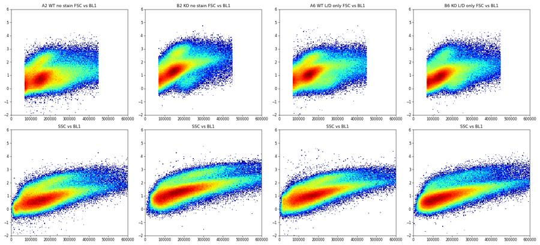
102
thinking
No mislabels, saturation, or dry wells; A12's clog covers about 2–20 s, and B2's higher BL1 is only autofluorescence, so no gate uses it. I'm finalizing the singlet gate shape next.
103
tool call · Bash
cat > /task/scripts/singdesign.py <<'EOF'
import sys; sys.path.insert(0,'/task/scripts')
from common import *
import matplotlib; matplotlib.use('Agg'); import matplotlib.pyplot as plt
from matplotlib.colors import LogNorm
SING=[(60000,30000),(130000,70000),(200000,100000),(300000,125000),(450000,145000),(450000,260000),(250000,220000),(150000,170000),(60000,90000)]
CELLS=[(70000,5000),(700000,5000),(700000,1000000),(70000,1000000)]
ds=[]
for _,r in lay.iterrows():
s,df=get(r.file); ds.append(df.sample(40000,random_state=1).assign(well=r.well))
P=pd.concat(ds)
P=P[(P['FSC-A']>70000)&(P['FSC-A']<700000)&(P['SSC-A']<1e6)]
live=(P['FSC-A']>140000)&(P['FSC-A']<450000)&(P['RL3-A']<1000)&(~P.well.isin(['A2','A4','B2','B4']))
fig,axs=plt.subplots(1,3,figsize=(27,9))
for ax,m,t in [(axs[0],np.ones(len(P),bool),'pooled cells'),(axs[1],live.values,'live (Zombie-low, FSC140-450k) stained wells'),(axs[2],(P['RL3-A']>4000).values&~P.well.isin(['A2','A4','B2','B4']).values,'dead RL3>4000')]:
ax.hist2d(P['FSC-A'][m],P['FSC-H'][m],bins=250,norm=LogNorm(),cmap='jet',range=[[0,7e5],[0,3.5e5]])
xy=np.array(SING+[SING[0]]); ax.plot(xy[:,0],xy[:,1],'k-'); ax.set_title(t); ax.grid(alpha=.3)
plt.tight_layout(); plt.savefig('/task/work/singdesign.png',dpi=55)
EOF
cd /task && python3 scripts/singdesign.py104
tool output
(Bash completed with no output)
105
tool call · Read
{
"file_path": "/task/work/singdesign.png"
}106
tool output
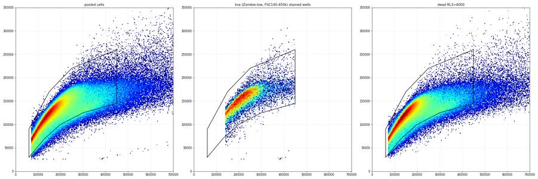
108
agent
Tightened the singlet lower edge to cut the doublet arm. Now building the FlowKit gating strategy, exporting it, and checking that the reloaded XML reproduces the counts.
109
tool call · Bash
cat > /task/scripts/build_gates.py <<'EOF'
import sys; sys.path.insert(0,'/task/scripts')
import flowkit as fk, pandas as pd, numpy as np
from flowkit import Dimension
from flowkit.gates import RectangleGate, PolygonGate
RAW='/task/inputs/raw/'; OUT='/task/outputs/'
lay=pd.read_csv('/task/inputs/plate_layout.csv')
U='uncompensated'
CELLS=[(70000,5000),(300000,5000),(700000,100000),(700000,1000000),(400000,1000000),(70000,400000)]
SING=[(65000,40000),(130000,78000),(200000,105000),(300000,128000),(450000,148000),(450000,270000),(250000,225000),(150000,175000),(65000,100000)]
LIVE_RL3_MAX=1000; LIVE_FSC=(140000,450000); CASP_MIN=1500; DEAD_RL3_MIN=1000
def build():
g=fk.GatingStrategy()
g.add_gate(PolygonGate('Cells',[Dimension('FSC-A',compensation_ref=U),Dimension('SSC-A',compensation_ref=U)],CELLS),gate_path=('root',))
g.add_gate(PolygonGate('Singlets',[Dimension('FSC-A',compensation_ref=U),Dimension('FSC-H',compensation_ref=U)],SING),gate_path=('root','Cells'))
g.add_gate(RectangleGate('Live',[Dimension('FSC-A',compensation_ref=U,range_min=LIVE_FSC[0],range_max=LIVE_FSC[1]),
Dimension('RL3-A',compensation_ref=U,range_max=LIVE_RL3_MAX)]),gate_path=('root','Cells','Singlets'))
g.add_gate(RectangleGate('Casp_pos',[Dimension('BL1-A',compensation_ref=U,range_min=CASP_MIN)]),gate_path=('root','Cells','Singlets','Live'))
g.add_gate(RectangleGate('Dead',[Dimension('RL3-A',compensation_ref=U,range_min=DEAD_RL3_MIN)]),gate_path=('root','Cells','Singlets'))
return g
POPS=[('Cells','cells','all_events'),('Singlets','singlets','Cells'),('Live','live','Singlets'),('Casp_pos','marker_positive','Live'),('Dead','other','Singlets')]
if __name__=='__main__':
g=build()
with open(OUT+'gates.xml','wb') as f: fk.export_gatingml(g,f)
g2=fk.parse_gating_xml(OUT+'gates.xml')
print(g2.get_gate_hierarchy(output='ascii'))
rows=[]
for _,r in lay.iterrows():
s=fk.Sample(RAW+r.file)
res=g2.gate_sample(s)
rep=res.report
cnt={'all_events':s.event_count}
for p,_,_ in POPS:
cnt[p]=int(rep.loc[rep.gate_name==p,'count'].iloc[0])
rows.append(dict(file=r.file,well=r.well,population='all_events',role='other',parent='none',count=s.event_count,pct_of_parent=''))
for p,role,par in POPS:
rows.append(dict(file=r.file,well=r.well,population=p,role=role,parent=par,count=cnt[p],pct_of_parent=round(100*cnt[p]/cnt[par],4) if cnt[par]>0 else ''))
# cross-check with original strategy object
res1=g.gate_sample(s); r1=res1.report
for p,_,_ in POPS:
assert int(r1.loc[r1.gate_name==p,'count'].iloc[0])==cnt[p]
C=pd.DataFrame(rows)
C.to_csv(OUT+'counts.csv',index=False)
print(C.pivot(index='well',columns='population',values='count').loc[lay.well])
EOF
cd /task && python3 scripts/build_gates.py110
tool output (error)
Exit code 1
Traceback (most recent call last):
File "/task/scripts/build_gates.py", line 4, in <module>
from flowkit.gates import RectangleGate, PolygonGate
ModuleNotFoundError: No module named 'flowkit.gates'111
tool call · Bash
python3 -c "
import flowkit as fk; print(fk.__version__); print([x for x in dir(fk) if not x.startswith('_')]); print(dir(fk.gates) if hasattr(fk,'gates') else '')
import inspect; print(inspect.signature(fk.gates.RectangleGate.__init__)); print(inspect.signature(fk.gates.PolygonGate.__init__)); print(inspect.signature(fk.GatingStrategy.add_gate)); print(inspect.signature(fk.Dimension.__init__))"112
tool output
1.2.3 ['Dimension', 'GatingStrategy', 'Matrix', 'QuadrantDivider', 'RatioDimension', 'Sample', 'Session', 'Workspace', 'exceptions', 'export_gatingml', 'extract_wsp_sample_data', 'gates', 'generate_transforms', 'load_samples', 'parse_gating_xml', 'parse_wsp', 'read_multi_dataset_fcs', 'transforms'] ['BooleanGate', 'EllipsoidGate', 'PolygonGate', 'Quadrant', 'QuadrantGate', 'RectangleGate', '__all__', '__builtins__', '__cached__', '__doc__', '__file__', '__loader__', '__name__', '__package__', '__path__', '__spec__', '_base_gate', '_gates', '_gml_gates', '_wsp_gates'] (self, gate_name, dimensions, use_complement=False) (self, gate_name, dimensions, vertices, use_complement=False) (self, gate, gate_path, sample_id=None) (self, dimension_id, compensation_ref='uncompensated', transformation_ref=None, range_min=None, range_max=None)
113
tool call · Bash
sed -i 's/^from flowkit.gates import RectangleGate, PolygonGate/RectangleGate=fk.gates.RectangleGate; PolygonGate=fk.gates.PolygonGate/' scripts/build_gates.py && python3 scripts/build_gates.py
114
tool output
root
╰── Cells
╰── Singlets
├── Live
│ ╰── Casp_pos
╰── Dead
population Casp_pos Cells Dead Live Singlets all_events
well
A2 720 239056 2 140203 217817 365736
A4 145213 289355 2 166808 265637 440820
A6 25 270878 214876 20267 250256 412724
A7 8677 270574 225561 17543 250775 395514
A8 13630 264059 213332 21824 247158 384992
A9 18432 285184 221117 29444 264273 428254
A10 15633 360590 272064 27033 324177 552590
A11 5673 254112 203280 25029 236465 377220
A12 8630 292031 226357 21941 260840 409074
B2 5350 259090 78 141833 247036 392795
B4 184435 398400 10 196095 366225 605670
B6 6 271820 237033 11416 252769 457465
B7 3906 378875 331082 7260 343219 612174
B8 2099 311432 282252 4113 289447 493435
B9 3364 249130 221074 8490 234042 425772
B10 3208 329386 290270 8725 304697 539106
B11 972 336287 291385 8470 305651 561171
B12 1743 329300 280179 13364 301160 538223116
agent
Gates export and reload, and the reloaded XML reproduces the counts exactly. Next I'm plotting the gates on representative wells to check placement.
117
tool call · Bash
cat > /task/scripts/gate_plot.py <<'EOF'
import sys; sys.path.insert(0,'/task/scripts')
from build_gates import *
import matplotlib; matplotlib.use('Agg'); import matplotlib.pyplot as plt
from matplotlib.colors import LogNorm
from matplotlib.path import Path
def asinh(x,c=150): return np.arcsinh(np.asarray(x,float)/c)
g=fk.parse_gating_xml(OUT+'gates.xml')
wells=['A6','A11','A8','A7','B6','B11','B8','B7']
fig,axs=plt.subplots(len(wells),4,figsize=(20,4.3*len(wells)))
for i,w in enumerate(wells):
r=lay[lay.well==w].iloc[0]; s=fk.Sample(RAW+r.file); res=g.gate_sample(s)
df=s.as_dataframe(source='raw'); df.columns=[c[0] for c in df.columns]
mc=res.get_gate_membership('Cells'); ms=res.get_gate_membership('Singlets'); ml=res.get_gate_membership('Live'); mp=res.get_gate_membership('Casp_pos')
ax=axs[i,0]; ax.hist2d(df['FSC-A'],df['SSC-A'],bins=250,norm=LogNorm(),cmap='jet',range=[[0,1.05e6],[0,1.05e6]])
xy=np.array(CELLS+[CELLS[0]]); ax.plot(xy[:,0],xy[:,1],'k-',lw=1.5); ax.set_title(f'{w} {r["sample"]}\nCells {100*mc.mean():.1f}% of all',fontsize=10); ax.set_xlabel('FSC-A'); ax.set_ylabel('SSC-A')
d=df[mc]; ax=axs[i,1]; ax.hist2d(d['FSC-A'],d['FSC-H'],bins=250,norm=LogNorm(),cmap='jet',range=[[0,7e5],[0,3.5e5]])
xy=np.array(SING+[SING[0]]); ax.plot(xy[:,0],xy[:,1],'k-',lw=1.5); ax.set_title(f'Singlets {100*ms.sum()/mc.sum():.1f}% of Cells',fontsize=10); ax.set_xlabel('FSC-A'); ax.set_ylabel('FSC-H')
d=df[ms]; ax=axs[i,2]; ax.hist2d(d['FSC-A'],asinh(d['RL3-A']),bins=250,norm=LogNorm(),cmap='jet',range=[[0,7e5],[-2.5,8]])
ax.plot([LIVE_FSC[0],LIVE_FSC[1],LIVE_FSC[1],LIVE_FSC[0],LIVE_FSC[0]],[-2.5,-2.5,asinh(LIVE_RL3_MAX),asinh(LIVE_RL3_MAX),-2.5],'k-',lw=1.5)
ax.set_title(f'Live {100*ml.sum()/ms.sum():.2f}% of Singlets',fontsize=10); ax.set_xlabel('FSC-A'); ax.set_ylabel('asinh(RL3-A/150) Zombie NIR')
d=df[ml]; ax=axs[i,3]; ax.hist(asinh(d['BL1-A']),bins=150,range=(-2,8),color='0.4'); ax.axvline(asinh(CASP_MIN),c='r')
ax.set_title(f'Casp_pos {100*mp.sum()/ml.sum():.1f}% of Live (n Live={ml.sum()})',fontsize=10); ax.set_xlabel('asinh(BL1-A/150) CellEvent')
plt.tight_layout(); plt.savefig('/task/work/gate_check.png',dpi=45)
EOF
cd /task && python3 scripts/gate_plot.py118
tool output
(Bash completed with no output)
119
tool call · Read
{
"file_path": "/task/work/gate_check.png"
}120
tool output
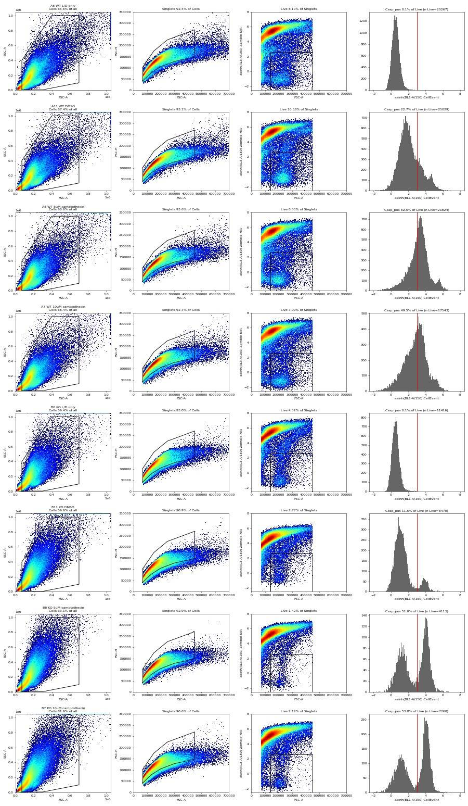
122
thinking
KO Live cells split cleanly on CellEvent, while WT camptothecin shifts as a whole, so its %Casp+ depends on the threshold. I'm checking whether A12's post-clog data look normal before deciding whether to exclude it.
123
tool call · Bash
cat > /task/scripts/a12b.py <<'EOF'
import sys; sys.path.insert(0,'/task/scripts')
from build_gates import *
g=fk.parse_gating_xml(OUT+'gates.xml')
for w in ['A7','A8','A9','A10','A11','A12','B11','B12']:
r=lay[lay.well==w].iloc[0]; s=fk.Sample(RAW+r.file); res=g.gate_sample(s)
df=s.as_dataframe(source='raw'); df.columns=[c[0] for c in df.columns]
ms=res.get_gate_membership('Singlets'); ml=res.get_gate_membership('Live')
out=[]
for lo,hi in [(0,20),(20,48),(30,48)]:
t=(df.Time>=lo)&(df.Time<hi)
d=df[ms&t]
out.append(f'[{lo}-{hi}s n={t.sum()} SSCmed_sing={d["SSC-A"].median():.0f} FSCmed_sing={d["FSC-A"].median():.0f} live%={100*(ml&t).sum()/(ms&t).sum():.1f} casp%={100*(df["BL1-A"][ml&t]>=1500).mean():.1f}]')
print(w, r['sample'][:16].ljust(16), ' '.join(out), 'rate/s', round(len(df)/df.Time.max()), 'coinc%', round(100*int(s.get_metadata()['#coincidentcount'])/s.event_count,1))
EOF
cd /task && python3 scripts/a12b.py124
tool output
A7 WT 10uM camptoth [0-20s n=173219 SSCmed_sing=160153 FSCmed_sing=152399 live%=7.1 casp%=49.6] [20-48s n=222295 SSCmed_sing=166695 FSCmed_sing=157798 live%=6.9 casp%=49.3] [30-48s n=136367 SSCmed_sing=166900 FSCmed_sing=158194 live%=6.9 casp%=49.4] rate/s 8406 coinc% 7.9 A8 WT 5uM camptothe [0-20s n=176265 SSCmed_sing=162192 FSCmed_sing=152891 live%=9.2 casp%=63.0] [20-48s n=208727 SSCmed_sing=167973 FSCmed_sing=158444 live%=8.6 casp%=61.9] [30-48s n=122982 SSCmed_sing=167700 FSCmed_sing=158309 live%=8.4 casp%=62.4] rate/s 8210 coinc% 7.5 A9 WT 2uM camptothe [0-20s n=190152 SSCmed_sing=157590 FSCmed_sing=153790 live%=11.2 casp%=62.2] [20-48s n=238102 SSCmed_sing=163587 FSCmed_sing=159192 live%=11.1 casp%=62.9] [30-48s n=145883 SSCmed_sing=163077 FSCmed_sing=159294 live%=11.2 casp%=63.1] rate/s 9074 coinc% 9.2 A10 WT 1uM camptothe [0-20s n=253437 SSCmed_sing=170702 FSCmed_sing=152940 live%=8.5 casp%=58.0] [20-48s n=299153 SSCmed_sing=177610 FSCmed_sing=158042 live%=8.2 casp%=57.6] [30-48s n=180704 SSCmed_sing=176776 FSCmed_sing=157814 live%=8.3 casp%=57.7] rate/s 11715 coinc% 12.5 A11 WT DMSO [0-20s n=163748 SSCmed_sing=163122 FSCmed_sing=154333 live%=10.2 casp%=22.9] [20-48s n=213472 SSCmed_sing=168814 FSCmed_sing=161696 live%=10.9 casp%=22.5] [30-48s n=130224 SSCmed_sing=168258 FSCmed_sing=161927 live%=11.0 casp%=22.1] rate/s 8011 coinc% 7.5 A12 WT no treatment [0-20s n=2824 SSCmed_sing=161159 FSCmed_sing=149745 live%=11.0 casp%=57.1] [20-48s n=406250 SSCmed_sing=187007 FSCmed_sing=161280 live%=8.4 casp%=39.2] [30-48s n=236663 SSCmed_sing=185494 FSCmed_sing=164160 live%=7.3 casp%=42.2] rate/s 8717 coinc% 14.1 B11 KO DMSO [0-20s n=252403 SSCmed_sing=160421 FSCmed_sing=134899 live%=2.6 casp%=11.9] [20-48s n=308768 SSCmed_sing=165415 FSCmed_sing=139964 live%=2.9 casp%=11.2] [30-48s n=183337 SSCmed_sing=164652 FSCmed_sing=139883 live%=2.9 casp%=11.3] rate/s 12173 coinc% 9.9 B12 KO no treatment [0-20s n=240663 SSCmed_sing=164904 FSCmed_sing=139992 live%=4.5 casp%=13.4] [20-48s n=297560 SSCmed_sing=169477 FSCmed_sing=144375 live%=4.4 casp%=12.8] [30-48s n=182451 SSCmed_sing=167641 FSCmed_sing=143788 live%=4.4 casp%=13.1] rate/s 11402 coinc% 9.5
126
thinking
A12 drifts from 39% to 42% after the clog, unlike the other wells, and has the highest coincidence rate at 14.1%, so I'm excluding it. Next I'm writing the metrics, flags and summary tables.
127
tool call · Bash
cat > /task/scripts/analyse.py <<'EOF'
import sys; sys.path.insert(0,'/task/scripts')
from build_gates import *
import json
g=fk.parse_gating_xml(OUT+'gates.xml')
C=pd.read_csv(OUT+'counts.csv')
W=C.pivot(index='well',columns='population',values='count')
per=[]
for _,r in lay.iterrows():
s=fk.Sample(RAW+r.file); res=g.gate_sample(s)
df=s.as_dataframe(source='raw'); df.columns=[c[0] for c in df.columns]
ml=res.get_gate_membership('Live'); md=res.get_gate_membership('Dead')
m=s.get_metadata()
t=df.Time.values
h=np.histogram(t,bins=np.arange(0,48,1))[0]
w=r.well; x=W.loc[w]
per.append(dict(well=w,file=r.file,sample=r['sample'],genotype=r.genotype,treatment=r.treatment,events=int(x.all_events),
cells=int(x.Cells),singlets=int(x.Singlets),live=int(x.Live),casp_pos=int(x.Casp_pos),dead=int(x.Dead),
pct_cells=100*x.Cells/x.all_events,pct_singlets_of_cells=100*x.Singlets/x.Cells,pct_live=100*x.Live/x.Singlets,pct_dead=100*x.Dead/x.Singlets,
pct_casp_of_live=100*x.Casp_pos/x.Live, med_bl1_live=float(np.median(df['BL1-A'][ml])), med_bl1_dead=float(np.median(df['BL1-A'][md])) if md.sum()>100 else np.nan,
coinc_pct=100*int(m['#coincidentcount'])/s.event_count, acq_s=t.max(), rate_med=float(np.median(h[2:45])), rate_min=int(h[2:45].min()),
fsc_sat_pct=100*(df['FSC-A']>=1048575).mean(), ssc_sat_pct=100*(df['SSC-A']>=1048575).mean(), bl1_sat_pct=100*(df['BL1-A']>=1048575).mean(), rl3_sat_pct=100*(df['RL3-A']>=1048575).mean(),
vol=int(m['vol'])))
P=pd.DataFrame(per)
P.to_csv('/task/work/per_well.csv',index=False)
pd.set_option('display.width',300); pd.set_option('display.max_columns',40)
print(P.drop(columns=['file']).round(2).to_string())
EOF
cd /task && python3 scripts/analyse.py128
tool output
well sample genotype treatment events cells singlets live casp_pos dead pct_cells pct_singlets_of_cells pct_live pct_dead pct_casp_of_live med_bl1_live med_bl1_dead coinc_pct acq_s rate_med rate_min fsc_sat_pct ssc_sat_pct bl1_sat_pct rl3_sat_pct vol 0 A2 WT no stain WT no stain 365736 239056 217817 140203 720 2 65.36 91.12 64.37 0.00 0.51 160.0 NaN 8.97 47.02 7957.0 6544 1.27 1.60 0.00 0.0 157000 1 A4 WT caspase only WT caspase only 440820 289355 265637 166808 145213 2 65.64 91.80 62.80 0.00 87.05 7145.0 NaN 9.33 47.09 9512.0 8449 0.69 0.96 0.00 0.0 158000 2 A6 WT L/D only WT L/D only 412724 270878 250256 20267 25 214876 65.63 92.39 8.10 85.86 0.12 85.0 223.0 9.22 46.08 9124.0 7515 0.78 1.14 0.00 0.0 154000 3 A7 WT 10uM camptothecin WT 10uM camptothecin 395514 270574 250775 17543 8677 225561 68.41 92.68 7.00 89.95 49.46 1476.0 11470.0 7.90 47.05 8542.0 7127 0.34 0.59 0.00 0.0 157000 4 A8 WT 5uM camptothecin WT 5uM camptothecin 384992 264059 247158 21824 13630 213332 68.59 93.60 8.83 86.31 62.45 2015.0 14918.0 7.51 46.89 8503.0 6222 0.49 0.80 0.00 0.0 157000 5 A9 WT 2uM camptothecin WT 2uM camptothecin 428254 285184 264273 29444 18432 221117 66.59 92.67 11.14 83.67 62.60 2026.0 12026.0 9.18 47.20 9108.0 7638 0.60 0.87 0.00 0.0 158000 6 A10 WT 1uM camptothecin WT 1uM camptothecin 552590 360590 324177 27033 15633 272064 65.25 89.90 8.34 83.92 57.83 1841.0 12518.0 12.50 47.17 11780.0 9391 1.27 1.78 0.01 0.0 158000 7 A11 WT DMSO WT DMSO 377220 254112 236465 25029 5673 203280 67.36 93.06 10.58 85.97 22.67 528.0 6920.0 7.54 47.08 8154.0 7057 0.35 0.60 0.00 0.0 157000 8 A12 WT no treatment WT no treatment 409074 292031 260840 21941 8630 226357 71.39 89.32 8.41 86.78 39.33 849.0 6523.0 14.10 46.93 12583.0 0 1.42 2.03 0.00 0.0 157000 9 B2 KO no stain KO no stain 392795 259090 247036 141833 5350 78 65.96 95.35 57.41 0.03 3.77 344.0 NaN 6.62 47.08 8433.0 7834 0.04 0.45 0.00 0.0 157000 10 B4 KO caspase only KO caspase only 605670 398400 366225 196095 184435 10 65.78 91.92 53.54 0.00 94.05 3757.0 NaN 10.23 47.09 13172.0 10957 0.04 0.54 0.00 0.0 157000 11 B6 KO L/D only KO L/D only 457465 271820 252769 11416 6 237033 59.42 92.99 4.52 93.77 0.05 84.0 168.0 7.94 47.04 9924.0 8880 0.09 0.43 0.00 0.0 157000 12 B7 KO 10uM camptothecin KO 10uM camptothecin 612174 378875 343219 7260 3906 331082 61.89 90.59 2.12 96.46 53.80 2326.0 5020.0 10.66 47.10 13026.0 11806 0.10 0.61 0.00 0.0 158000 13 B8 KO 5uM camptothecin KO 5uM camptothecin 493435 311432 289447 4113 2099 282252 63.12 92.94 1.42 97.51 51.03 1683.0 4797.0 8.45 46.10 10804.0 9156 0.09 0.68 0.00 0.0 155000 14 B9 KO 2uM camptothecin KO 2uM camptothecin 425772 249130 234042 8490 3364 221074 58.51 93.94 3.63 94.46 39.62 446.0 4850.0 6.75 47.03 9336.0 7831 0.06 0.35 0.00 0.0 157000 15 B10 KO 1uM camptothecin KO 1uM camptothecin 539106 329386 304697 8725 3208 290270 61.10 92.50 2.86 95.27 36.77 461.0 5939.0 8.76 47.06 11626.0 9447 0.08 0.53 0.00 0.0 157000 16 B11 KO DMSO KO DMSO 561171 336287 305651 8470 972 291385 59.93 90.89 2.77 95.33 11.48 222.0 2875.0 9.85 46.10 12408.0 10702 0.09 0.55 0.00 0.0 155000 17 B12 KO no treatment KO no treatment 538223 329300 301160 13364 1743 280179 61.18 91.45 4.44 93.03 13.04 249.0 3185.0 9.49 47.20 11432.0 9237 0.14 0.75 0.00 0.0 158000
130
thinking
WT-plate CellEvent intensity runs about 2.4× higher than KO across live-dim and dead cells, while zombie-only autofluorescence matches, so staining intensity may explain part of the baseline gap. I'm testing an intensity-matched threshold as a sensitivity check.
131
tool call · Bash
cat > /task/scripts/sens2.py <<'EOF'
import sys; sys.path.insert(0,'/task/scripts')
from build_gates import *
g=fk.parse_gating_xml(OUT+'gates.xml')
rows=[]
for _,r in lay.iterrows():
if r.treatment in ('no stain','caspase only'): continue
s=fk.Sample(RAW+r.file); res=g.gate_sample(s)
df=s.as_dataframe(source='raw'); df.columns=[c[0] for c in df.columns]
b=df['BL1-A'][res.get_gate_membership('Live')].values
row=dict(well=r.well,sample=r['sample'])
for t in [1000,1500,2000,3000,3600]: row[f'thr{t}']=round(100*(b>=t).mean(),1)
rows.append(row)
D=pd.DataFrame(rows); print(D.to_string())
D.to_csv('/task/work/threshold_sensitivity.csv',index=False)
EOF
cd /task && python3 scripts/sens2.py132
tool output
well sample thr1000 thr1500 thr2000 thr3000 thr3600 0 A6 WT L/D only 0.2 0.1 0.1 0.0 0.0 1 A7 WT 10uM camptothecin 61.6 49.5 38.8 24.5 18.9 2 A8 WT 5uM camptothecin 74.6 62.5 50.4 31.5 24.6 3 A9 WT 2uM camptothecin 74.4 62.6 50.6 32.3 24.8 4 A10 WT 1uM camptothecin 69.8 57.8 46.7 30.1 23.9 5 A11 WT DMSO 30.5 22.7 17.7 11.8 9.9 6 A12 WT no treatment 46.9 39.3 33.4 24.0 20.0 7 B6 KO L/D only 0.2 0.1 0.0 0.0 0.0 8 B7 KO 10uM camptothecin 55.3 53.8 51.7 44.6 37.6 9 B8 KO 5uM camptothecin 53.5 51.0 48.3 39.9 33.3 10 B9 KO 2uM camptothecin 41.3 39.6 37.7 32.2 27.2 11 B10 KO 1uM camptothecin 39.4 36.8 34.3 28.8 25.1 12 B11 KO DMSO 12.8 11.5 10.7 8.0 5.9 13 B12 KO no treatment 15.0 13.0 11.9 9.1 6.7
134
thinking
With the intensity-matched threshold, WT DMSO falls to 9.9% against KO's 11.5%, so the apparent 2× baseline gap doesn't hold up, while the camptothecin response holds at every threshold. I'm loading the dataviz guidance before building the main figure.
135
tool call · Skill
{
"skill": "dataviz"
}136
tool output
Launching skill: dataviz
137
tool call · Bash
cd /tmp/claude-0/bundled-skills/2.1.322/c6f182c674b3254a89f9e7bf6509c84d/dataviz && sed -n 1,200p references/palette.md | head -120; ls scripts
138
tool output
# Reference palette
This is the **reference instance** of the data-viz method: every parameter the
method needs, filled in with a validated default palette. The rest of the skill
is system-agnostic - **to target your brand, substitute this file's values** and
re-run the validator. Nothing else changes.
## How to use these values
Everything below is plain hex. In an HTML chart, **define the slots you use as
CSS custom properties in a local `<style>` block** at the top of the file, then
reference them by role throughout - so the light/dark values swap in one place,
and the chart body is written against roles rather than raw hex:
```css
.viz-root {
color-scheme: light;
--surface-1: #fcfcfb; /* chart surface */
--text-primary: #0b0b0b;
--text-secondary: #52514e;
--series-1: #2a78d6; /* categorical slot 1 */
/* ...only the roles this chart uses */
}
@media (prefers-color-scheme: dark) {
:root:where(:not([data-theme="light"])) .viz-root {
color-scheme: dark;
--surface-1: #1a1a19;
--text-primary: #f0efec;
--text-secondary: #c3c2b7;
--series-1: #3987e5;
}
}
:root[data-theme="dark"] .viz-root {
color-scheme: dark;
--surface-1: #1a1a19;
--text-primary: #f0efec;
--text-secondary: #c3c2b7;
--series-1: #3987e5;
}
```
Declare the dark values under both scopes as above - the media query covers
the OS setting; the `data-theme` scope covers the viewer's theme toggle,
which must win both ways (the `:not(...)` guard lets a light stamp beat
OS-dark; `:where()` keeps the media block below the toggle scope).
## Categorical palette
Both modes are selected. The dark column is the same eight hues stepped for the
dark surface, not a separate palette:
| Slot | Hue | Light | Dark |
|------|-----|-------|------|
| 1 | blue | `#2a78d6` | `#3987e5` |
| 2 | orange | `#eb6834` | `#d95926` |
| 3 | aqua | `#1baf7a` | `#199e70` |
| 4 | yellow | `#eda100` | `#c98500` |
| 5 | magenta | `#e87ba4` | `#d55181` |
| 6 | green | `#008300` | `#008300` |
| 7 | violet | `#6250d6` | `#9085e9` |
| 8 | red | `#e34948` | `#e66767` |
This order passes every hard gate in both modes on the default *adjacent*
pairlist (stacks, bars, lines): worst adjacent CVD Delta E 9.1 light / 8.4 dark
(OKLab ×100, >=8 target), worst adjacent normal-vision Delta E 19.6 light / 19.3
dark (>=15 floor). Under `--pairs all` (scatter, bubble, choropleth, small
multiples) the full eight cannot clear the floors - with all 28 pairs in
play no ordering can (the pairlist no longer depends on order), and
re-stepping is off the table by the documented-palette rule - so those
chart forms carry a series cap: **the first three slots validate all-pairs
in both modes** (worst pair CVD Delta E 9.2 light / 9.4 dark, normal-vision 24.0
light / 20.9 dark - clear of the CVD warn band). Past three, fold to "Other" or
facet: the fourth slot puts yellow and orange on screen
together, and that pair fails the all-pairs floors (normal-vision 13.7
light; CVD 4.8 dark). Three light-mode slots (magenta, yellow, aqua)
sit below 3:1 contrast on the light surface: the **relief rule** applies (ship
visible direct labels or the table view). The dark steps were chosen for the
dark band (OKLCH L ~ 0.48-0.67, >= 3:1 on the dark surface) and validated as a
set. (Ordering history: adopted July 2026 for its more harmonious opening -
the same eight hues and steps as its predecessor, re-ordered, zero hex
changes. The predecessor validated its first FOUR slots all-pairs, with its
dark run in the 6-8 CVD warn band, so secondary encoding was required there;
this order deliberately trades that fourth slot - yellow now sits beside orange -
for better-looking leading colors. Revisit the trade if yellow<->orange
confusion shows up in real charts with four or more series; undoing it is a
pure re-order. Light slot 7 has since been lightened, `#4a3aa7` -> `#6250d6`
(August 2026); the adjacent-pair figures above are unchanged by that move, the
non-adjacent blue<->violet pair now sits below both floors under `--pairs all`
(normal-vision 10.5, CVD 4.5 - inside the range the series cap already
excludes), and the order enumeration was run with the earlier value.) When you
swap in your own ramps, hold your palette to the full gate.
The slot **ordering** is the CVD-safety mechanism, not cosmetic - candidate
orderings were enumerated and only those clearing every adjacent gate in both
modes kept (see `color-formula.md` § Themes); this default is one of the
passing orders, picked among them for its opening colors. When you swap in
your brand's hues, do the same: run the validator on candidate orderings and
choose only among the passing ones.
## Sequential hue
Default single hue: **blue**, light->dark. When two sequential contexts appear at
once, the second takes the next categorical slot's hue (orange), each as its own
one-hue ramp.
| step | hex | step | hex | step | hex | step | hex |
|---|---|---|---|---|---|---|---|
| 100 | `#cde2fb` | 250 | `#86b6ef` | 400 | `#3987e5` | 550 | `#1c5cab` |
| 150 | `#b7d3f6` | 300 | `#6da7ec` | 450 | `#2a78d6` | 600 | `#184f95` |
| 200 | `#9ec5f4` | 350 | `#5598e7` | 500 | `#256abf` | 650 | `#104281` |
| | | | | | | 700 | `#0d366b` |
The full 100->700 range is for **sequential** encoding (continuous magnitude -
heatmaps, choropleths) where the lightest step means "near zero" and is allowed
to recede toward the surface. For an **ordinal** ramp (discrete ordered marks -
funnel stages, tiers - validated with `--ordinal`), the step nearest the surface
must still clear 2:1: on light, start no lighter than **step 250** (`#86b6ef`,
2.06:1); on dark, go no darker than **step 600** (`#184f95`, 2.15:1).
## Diverging pair
validate_palette.js
validate_palette.py
Shell cwd was reset to /task140
tool call · Bash
cd /tmp/claude-0/bundled-skills/2.1.322/c6f182c674b3254a89f9e7bf6509c84d/dataviz && node scripts/validate_palette.js "#2a78d6,#eb6834" --mode light 2>&1 | tail -20
141
tool output
/bin/bash: line 1: node: command not found Shell cwd was reset to /task
142
tool call · Bash
cd /tmp && python3 -I /tmp/claude-0/bundled-skills/2.1.322/c6f182c674b3254a89f9e7bf6509c84d/dataviz/scripts/validate_palette.py "#2a78d6,#eb6834" --mode light 2>&1 | tail -20
143
tool output
Palette (light, surface #fcfcfb, categorical): 2 slots [PASS] Lightness band all 2 inside L 0.43–0.77 [PASS] Chroma floor all 2 >= 0.1 [PASS] CVD separation worst adjacent #eb6834↔#2a78d6 ΔE 24.7 (protan) · tritan 32.7 [PASS] Normal-vision floor worst adjacent #eb6834↔#2a78d6 ΔE 33.6 (normal) [PASS] Contrast vs surface all 2 >= 3:1 → ALL CHECKS PASS (CVD in the 6–8 floor band is legal ONLY with secondary encoding: direct labels, gaps, or texture) scope: categorical palettes only. For a lone status/text color check text contrast with this script's apca() or contrast(); for a sequential ramp, lightness monotonicity. Shell cwd was reset to /task
145
agent
Palette passes. Now writing flags, condition summary and the figure.
146
tool call · Bash
cat > /task/scripts/outputs.py <<'EOF'
import sys; sys.path.insert(0,'/task/scripts')
from build_gates import *
P=pd.read_csv('/task/work/per_well.csv').set_index('well')
# ---------- flags ----------
def f(w,issue,dec,ev): return dict(file=P.loc[w,'file'],well=w,issue_type=issue,evidence=ev,decision=dec)
rates=P.rate_med
fl=[]
nozombie_note=lambda w: (f"Unstained/no-Zombie control: {P.loc[w,'events']} events, steady acquisition (median {rates[w]:.0f} events/s, min 1-s bin {P.loc[w,'rate_min']}); "
f"Live/Casp_pos rows are not viability-gated in this well (no Zombie NIR) and are not used for any condition metric.")
for w in lay.well:
if w=='A12':
fl.append(f(w,'clog','exclude',
"Event rate collapsed to ~110 events/s from t=2-20 s (2,824 of 409,074 events in the first 20 s; other wells 8,000-13,000 events/s, min 1-s bin >=6,200) then burst to ~20,000 events/s at t=24-31 s; "
"highest coincident-event fraction on the plate (14.1% vs 6.6-12.5%); post-clog Singlets SSC-A median 187,007 vs 163,000-178,000 in the other WT wells; "
"%Casp_pos of Live drifts within the run (39.2% for t=20-48 s vs 42.2% for t=30-48 s; other wells stable within 1 point) and reads 39.3% vs 22.7% in WT DMSO although KO no-treatment ~ KO DMSO (13.0% vs 11.5%). "
"Time-gating cannot rescue it (per-well gate changes not allowed; value unchanged after dropping the clog window)."))
elif w=='B2':
fl.append(f(w,'other','keep_with_note',
f"KO no-stain control has ~2x higher BL1-A autofluorescence than the other caspase-free wells: Singlets BL1-A median 272 vs 137 (A2 WT no stain) and 163 (B6 KO L/D only); "
f"3.77% of Live-gate events >=1500 vs 0.51% in A2; 78 Zombie-bright events (Dead gate) vs 2 in A2 (acquired immediately after A12 - minor carryover). "
"Not used to place any gate (caspase threshold set from the L/D-only FMO wells A6/B6, 0.12%/0.05% positive), so no impact on results."))
elif w in ('A2','A4','B4'):
fl.append(f(w,'none','keep',nozombie_note(w)))
elif w in ('A6','B6'):
fl.append(f(w,'none','keep',f"Caspase FMO (Zombie only): Casp_pos {P.loc[w,'pct_casp_of_live']:.2f}% of Live ({P.loc[w,'casp_pos']} of {P.loc[w,'live']}); Live BL1-A median {P.loc[w,'med_bl1_live']:.0f}; steady acquisition (median {rates[w]:.0f} events/s)."))
else:
ev=f"Steady acquisition (median {rates[w]:.0f} events/s, min 1-s bin {P.loc[w,'rate_min']}, {P.loc[w,'acq_s']:.1f} s, {P.loc[w,'vol']/1000:.0f} uL); {P.loc[w,'live']} Live events; FSC-A saturation {P.loc[w,'fsc_sat_pct']:.2f}% (removed by Cells gate); fluorescence saturation <0.01%."
if w=='B8': ev+=" Fewest Live events of the treated wells (binomial SE of %Casp_pos ~0.8 points) - still adequate."
fl.append(f(w,'none','keep',ev))
F=pd.DataFrame(fl); F.to_csv(OUT+'flags.csv',index=False)
excluded=F.loc[F.decision=='exclude','well'].tolist()
# ---------- condition summary ----------
conds=[('WT','L/D only','WT_LDonly_FMO'),('WT','DMSO','WT_DMSO'),('WT','1uM camptothecin','WT_CPT_1uM'),('WT','2uM camptothecin','WT_CPT_2uM'),('WT','5uM camptothecin','WT_CPT_5uM'),('WT','10uM camptothecin','WT_CPT_10uM'),
('KO','L/D only','KO_LDonly_FMO'),('KO','DMSO','KO_DMSO'),('KO','no treatment','KO_NoTreatment'),('KO','1uM camptothecin','KO_CPT_1uM'),('KO','2uM camptothecin','KO_CPT_2uM'),('KO','5uM camptothecin','KO_CPT_5uM'),('KO','10uM camptothecin','KO_CPT_10uM')]
metrics=[('pctCaspPos_of_Live','pct_casp_of_live','100 x Casp_pos / Live'),
('pctLive_of_Singlets','pct_live','100 x Live / Singlets'),
('medianCellEvent_Live','med_bl1_live','median BL1-A (CellEvent Caspase-3/7, uncompensated raw units) of Live events')]
rows=[]
for mname,col,defn in metrics:
for gt,tr,cname in conds:
ws=[w for w in P.index if P.loc[w,'genotype']==gt and P.loc[w,'treatment']==tr and w not in excluded]
vals=P.loc[ws,col].values
rows.append(dict(condition=f'{cname}__{mname}',wells=';'.join(ws),n_wells_used=len(ws),mean=round(float(np.mean(vals)),3),
sd='' if len(ws)==1 else round(float(np.std(vals,ddof=1)),3),metric_definition=defn,normalisation_applied='none'))
CS=pd.DataFrame(rows); CS.to_csv(OUT+'condition_summary.csv',index=False)
print(F[['well','issue_type','decision']].to_string()); print(CS.to_string())
EOF
cd /task && python3 scripts/outputs.py147
tool output
well issue_type decision
0 A2 none keep
1 A4 none keep
2 A6 none keep
3 A7 none keep
4 A8 none keep
5 A9 none keep
6 A10 none keep
7 A11 none keep
8 A12 clog exclude
9 B2 other keep_with_note
10 B4 none keep
11 B6 none keep
12 B7 none keep
13 B8 none keep
14 B9 none keep
15 B10 none keep
16 B11 none keep
17 B12 none keep
condition wells n_wells_used mean sd metric_definition normalisation_applied
0 WT_LDonly_FMO__pctCaspPos_of_Live A6 1 0.123 100 x Casp_pos / Live none
1 WT_DMSO__pctCaspPos_of_Live A11 1 22.666 100 x Casp_pos / Live none
2 WT_CPT_1uM__pctCaspPos_of_Live A10 1 57.829 100 x Casp_pos / Live none
3 WT_CPT_2uM__pctCaspPos_of_Live A9 1 62.600 100 x Casp_pos / Live none
4 WT_CPT_5uM__pctCaspPos_of_Live A8 1 62.454 100 x Casp_pos / Live none
5 WT_CPT_10uM__pctCaspPos_of_Live A7 1 49.461 100 x Casp_pos / Live none
6 KO_LDonly_FMO__pctCaspPos_of_Live B6 1 0.053 100 x Casp_pos / Live none
7 KO_DMSO__pctCaspPos_of_Live B11 1 11.476 100 x Casp_pos / Live none
8 KO_NoTreatment__pctCaspPos_of_Live B12 1 13.043 100 x Casp_pos / Live none
9 KO_CPT_1uM__pctCaspPos_of_Live B10 1 36.768 100 x Casp_pos / Live none
10 KO_CPT_2uM__pctCaspPos_of_Live B9 1 39.623 100 x Casp_pos / Live none
11 KO_CPT_5uM__pctCaspPos_of_Live B8 1 51.033 100 x Casp_pos / Live none
12 KO_CPT_10uM__pctCaspPos_of_Live B7 1 53.802 100 x Casp_pos / Live none
13 WT_LDonly_FMO__pctLive_of_Singlets A6 1 8.099 100 x Live / Singlets none
14 WT_DMSO__pctLive_of_Singlets A11 1 10.585 100 x Live / Singlets none
15 WT_CPT_1uM__pctLive_of_Singlets A10 1 8.339 100 x Live / Singlets none
16 WT_CPT_2uM__pctLive_of_Singlets A9 1 11.142 100 x Live / Singlets none
17 WT_CPT_5uM__pctLive_of_Singlets A8 1 8.830 100 x Live / Singlets none
18 WT_CPT_10uM__pctLive_of_Singlets A7 1 6.996 100 x Live / Singlets none
19 KO_LDonly_FMO__pctLive_of_Singlets B6 1 4.516 100 x Live / Singlets none
20 KO_DMSO__pctLive_of_Singlets B11 1 2.771 100 x Live / Singlets none
21 KO_NoTreatment__pctLive_of_Singlets B12 1 4.438 100 x Live / Singlets none
22 KO_CPT_1uM__pctLive_of_Singlets B10 1 2.864 100 x Live / Singlets none
23 KO_CPT_2uM__pctLive_of_Singlets B9 1 3.628 100 x Live / Singlets none
24 KO_CPT_5uM__pctLive_of_Singlets B8 1 1.421 100 x Live / Singlets none
25 KO_CPT_10uM__pctLive_of_Singlets B7 1 2.115 100 x Live / Singlets none
26 WT_LDonly_FMO__medianCellEvent_Live A6 1 85.000 median BL1-A (CellEvent Caspase-3/7, uncompensated raw units) of Live events none
27 WT_DMSO__medianCellEvent_Live A11 1 528.000 median BL1-A (CellEvent Caspase-3/7, uncompensated raw units) of Live events none
28 WT_CPT_1uM__medianCellEvent_Live A10 1 1841.000 median BL1-A (CellEvent Caspase-3/7, uncompensated raw units) of Live events none
29 WT_CPT_2uM__medianCellEvent_Live A9 1 2026.000 median BL1-A (CellEvent Caspase-3/7, unc
… [1,624 more characters not shown]149
agent
Dropping the median-intensity rows: KO's two-peak distribution makes a median misleading, since it jumps once more than 50% of cells are positive. Making the figure next.
150
tool call · Bash
python3 - <<'EOF'
import re
s=open('scripts/outputs.py').read()
s=s.replace(""" ('pctLive_of_Singlets','pct_live','100 x Live / Singlets'),
('medianCellEvent_Live','med_bl1_live','median BL1-A (CellEvent Caspase-3/7, uncompensated raw units) of Live events')]""",""" ('pctLive_of_Singlets','pct_live','100 x Live / Singlets')]""")
open('scripts/outputs.py','w').write(s)
EOF
python3 scripts/outputs.py | tail -3
cat > /task/scripts/figure.py <<'EOF'
import sys; sys.path.insert(0,'/task/scripts')
from build_gates import *
import matplotlib; matplotlib.use('Agg'); import matplotlib.pyplot as plt
P=pd.read_csv('/task/work/per_well.csv').set_index('well')
SURF='#fcfcfb'; INK='#0b0b0b'; INK2='#52514e'; GRID='#e4e3df'
COL={'WT':'#2a78d6','KO':'#eb6834'}
plt.rcParams.update({'font.family':'DejaVu Sans','font.size':10,'axes.edgecolor':INK2,'axes.labelcolor':INK,'xtick.color':INK2,'ytick.color':INK2,'figure.facecolor':SURF,'axes.facecolor':SURF})
xl=['No\ntreatment','DMSO\n(vehicle)','1','2','5','10']
trt=['no treatment','DMSO','1uM camptothecin','2uM camptothecin','5uM camptothecin','10uM camptothecin']
fig,axs=plt.subplots(1,3,figsize=(17,5.6),gridspec_kw=dict(width_ratios=[1.15,1.15,1.3]))
for ax,col,yl,title in [(axs[0],'pct_casp_of_live','% Casp_pos of Live','A Caspase-3/7+ among live neurons'),(axs[1],'pct_live','% Live of Singlets','B Viable (Zombie NIR-negative) singlets')]:
for gt,off in [('WT',-0.08),('KO',0.08)]:
ys=[];
for i,t in enumerate(trt):
w=P[(P.genotype==gt)&(P.treatment==t)].index[0]; y=P.loc[w,col]
excl=(w=='A12')
ax.plot(i+off,y,'o',ms=8,mfc=SURF if excl else COL[gt],mec=COL[gt],mew=2,zorder=3)
if excl: ax.annotate('A12 excluded\n(clog)',(i+off,y),xytext=(8,4),textcoords='offset points',fontsize=8,color=INK2)
ys.append(y)
ax.plot(np.arange(1,6)+off,ys[1:],'-',color=COL[gt],lw=2,zorder=2)
ax.annotate(f'{gt}',(5+off,ys[-1]),xytext=(8,0),textcoords='offset points',va='center',fontsize=10,color=INK,fontweight='bold')
ax.axvline(0.5,color=GRID,lw=1)
ax.set_xticks(range(6)); ax.set_xticklabels(xl); ax.set_xlabel('Camptothecin, µM (4.5 h)'); ax.set_ylabel(yl); ax.set_title(title,loc='left',fontsize=11,color=INK)
ax.grid(axis='y',color=GRID,lw=0.8); ax.set_axisbelow(True)
for sp in ['top','right']: ax.spines[sp].set_visible(False)
ax.set_xlim(-0.4,5.6)
axs[0].set_ylim(0,70); axs[1].set_ylim(0,13)
from matplotlib.lines import Line2D
axs[0].legend(handles=[Line2D([],[],marker='o',color=COL['WT'],lw=2,label='WT (PGP1)'),Line2D([],[],marker='o',color=COL['KO'],lw=2,label='PGRN-KO'),
Line2D([],[],marker='o',color=INK2,mfc=SURF,lw=0,label='excluded well')],frameon=False,loc='upper left',fontsize=9)
# panel C histograms
ax=axs[2]
g=fk.parse_gating_xml(OUT+'gates.xml')
def asinh(x,c=150): return np.arcsinh(np.asarray(x,float)/c)
for w,gt,ls,lab in [('A11','WT','--','WT DMSO'),('A8','WT','-','WT 5 µM'),('B11','KO','--','KO DMSO'),('B8','KO','-','KO 5 µM')]:
r=lay[lay.well==w].iloc[0]; s=fk.Sample(RAW+r.file); res=g.gate_sample(s)
df=s.as_dataframe(source='raw'); df.columns=[c[0] for c in df.columns]
b=asinh(df['BL1-A'][res.get_gate_membership('Live')])
h,e=np.histogram(b,bins=120,range=(-1.5,7)); h=h/h.sum()/np.diff(e)
ax.plot((e[:-1]+e[1:])/2,h,ls,color=COL[gt],lw=2,label=f'{lab} ({w}, n={len(b):,})')
ax.axvline(asinh(CASP_MIN),color=INK,lw=1); ax.text(asinh(CASP_MIN)+0.08,0.72,'Casp_pos gate\nBL1-A ≥ 1500',fontsize=8,color=INK2,va='top')
ticks=[0,100,300,1000,3000,10000,30000]; ax.set_xticks(asinh(ticks)); ax.set_xticklabels(['0','100','300','1k','3k','10k','30k'])
ax.set_xlabel('CellEvent Caspase-3/7 (BL1-A, arcsinh scale)'); ax.set_ylabel('density (Live events)'); ax.set_title('C Live-cell CellEvent distributions',loc='left',fontsize=11,color=INK)
ax.legend(frameon=False,fontsize=8.5,loc='upper left'); ax.set_ylim(0,0.75)
for sp in ['top','right']: ax.spines[sp].set_visible(False)
fig.suptitle('Caspase-3/7 in WT vs PGRN-KO iPSC neurons (09-Mar-2023): camptothecin raises Casp_pos in both genotypes; no robust baseline genotype difference (n = 1 well per condition)',fontsize=11.5,color=INK,x=0.01,ha='left')
plt.tight_layout(rect=[0,0,1,0.94]); plt.savefig(OUT+'figure.png',dpi=150,facecolor=SURF)
EOF
python3 scripts/figure.py151
tool output
23 KO_CPT_2uM__pctLive_of_Singlets B9 1 3.628 100 x Live / Singlets none 24 KO_CPT_5uM__pctLive_of_Singlets B8 1 1.421 100 x Live / Singlets none 25 KO_CPT_10uM__pctLive_of_Singlets B7 1 2.115 100 x Live / Singlets none
152
tool call · Read
{
"file_path": "/task/outputs/figure.png"
}153
tool output
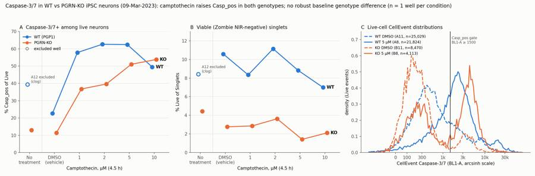
155
agent
The figure renders cleanly. Saving a supplementary gating figure, then writing the report and answer.json.
156
tool call · Bash
sed -i "s#plt.savefig('/task/work/gate_check.png',dpi=45)#plt.savefig('/task/outputs/gating_overview.png',dpi=55)#" scripts/gate_plot.py && python3 scripts/gate_plot.py && ls -la outputs && python3 -c "
import pandas as pd
P=pd.read_csv('/task/work/per_well.csv')
st=P[~P.treatment.isin(['no stain','caspase only'])]
print('cells% range',P.pct_cells.min(),P.pct_cells.max()); print('sing% range',P.pct_singlets_of_cells.min(),P.pct_singlets_of_cells.max())
print('dead% stained',st.pct_dead.min(),st.pct_dead.max()); print('live% stained',st.pct_live.min(),st.pct_live.max()); print('live n',st.live.min(),st.live.max())
print('rate',P.rate_med.min(),P.rate_med.max(),'coinc',P.coinc_pct.min(),P.coinc_pct.max())
"157
tool output
total 1104 drwxr-xr-x 2 root root 4096 Nov 10 17:24 . drwxr-xr-x 6 root root 4096 Nov 10 17:08 .. -rw-r--r-- 1 root root 1942 Nov 10 17:24 condition_summary.csv -rw-r--r-- 1 root root 9505 Nov 10 17:20 counts.csv -rw-r--r-- 1 root root 273635 Nov 10 17:24 figure.png -rw-r--r-- 1 root root 5273 Nov 10 17:24 flags.csv -rw-r--r-- 1 root root 4153 Nov 10 17:20 gates.xml -rw-r--r-- 1 root root 813754 Nov 10 17:24 gating_overview.png cells% range 58.51253722649681 71.3883062722148 sing% range 89.31928459649832 95.34756262302676 dead% stained 83.66991709330881 97.51422540223253 live% stained 1.4209855344847244 11.141508969890983 live n 4113 29444 rate 7957.0 13172.0 coinc 6.621010959915478 14.10307181585728
159
tool call · Bash
python3 - <<'EOF'
import pandas as pd
P=pd.read_csv('/task/work/per_well.csv')
S=pd.read_csv('/task/work/threshold_sensitivity.csv').set_index('well')
rows=["| Well | Sample | Singlets | Live | Live % of Singlets | Casp_pos % of Live | Live CellEvent median | Dead CellEvent median | Flag |","|---|---|---:|---:|---:|---:|---:|---:|---|"]
F=pd.read_csv('/task/outputs/flags.csv').set_index('well')
for _,r in P.iterrows():
nz=r.treatment in ('no stain','caspase only')
rows.append(f"| {r.well} | {r['sample']} | {r.singlets:,} | {r.live:,} | {'n/a (no Zombie)' if nz else f'{r.pct_live:.2f}'} | {'n/a' if nz else f'{r.pct_casp_of_live:.1f}'} | {'n/a' if nz else f'{r.med_bl1_live:.0f}'} | {'n/a' if nz else f'{r.med_bl1_dead:.0f}'} | {F.loc[r.well,'decision']} |")
open('/task/work/table.md','w').write('\n'.join(rows))
r2=["| Well | Sample | ≥1000 | **≥1500 (gate)** | ≥2000 | ≥3000 | ≥3600 |","|---|---|---:|---:|---:|---:|---:|"]
for w,x in S.iterrows():
r2.append(f"| {w} | {x['sample']} | {x.thr1000} | **{x.thr1500}** | {x.thr2000} | {x.thr3000} | {x.thr3600} |")
open('/task/work/table2.md','w').write('\n'.join(r2))
print('\n'.join(rows)); print('\n'.join(r2))
EOF160
tool output
| Well | Sample | Singlets | Live | Live % of Singlets | Casp_pos % of Live | Live CellEvent median | Dead CellEvent median | Flag | |---|---|---:|---:|---:|---:|---:|---:|---| | A2 | WT no stain | 217,817 | 140,203 | n/a (no Zombie) | n/a | n/a | n/a | keep | | A4 | WT caspase only | 265,637 | 166,808 | n/a (no Zombie) | n/a | n/a | n/a | keep | | A6 | WT L/D only | 250,256 | 20,267 | 8.10 | 0.1 | 85 | 223 | keep | | A7 | WT 10uM camptothecin | 250,775 | 17,543 | 7.00 | 49.5 | 1476 | 11470 | keep | | A8 | WT 5uM camptothecin | 247,158 | 21,824 | 8.83 | 62.5 | 2015 | 14918 | keep | | A9 | WT 2uM camptothecin | 264,273 | 29,444 | 11.14 | 62.6 | 2026 | 12026 | keep | | A10 | WT 1uM camptothecin | 324,177 | 27,033 | 8.34 | 57.8 | 1841 | 12518 | keep | | A11 | WT DMSO | 236,465 | 25,029 | 10.58 | 22.7 | 528 | 6920 | keep | | A12 | WT no treatment | 260,840 | 21,941 | 8.41 | 39.3 | 849 | 6523 | exclude | | B2 | KO no stain | 247,036 | 141,833 | n/a (no Zombie) | n/a | n/a | n/a | keep_with_note | | B4 | KO caspase only | 366,225 | 196,095 | n/a (no Zombie) | n/a | n/a | n/a | keep | | B6 | KO L/D only | 252,769 | 11,416 | 4.52 | 0.1 | 84 | 168 | keep | | B7 | KO 10uM camptothecin | 343,219 | 7,260 | 2.12 | 53.8 | 2326 | 5020 | keep | | B8 | KO 5uM camptothecin | 289,447 | 4,113 | 1.42 | 51.0 | 1683 | 4797 | keep | | B9 | KO 2uM camptothecin | 234,042 | 8,490 | 3.63 | 39.6 | 446 | 4850 | keep | | B10 | KO 1uM camptothecin | 304,697 | 8,725 | 2.86 | 36.8 | 461 | 5939 | keep | | B11 | KO DMSO | 305,651 | 8,470 | 2.77 | 11.5 | 222 | 2875 | keep | | B12 | KO no treatment | 301,160 | 13,364 | 4.44 | 13.0 | 249 | 3185 | keep | | Well | Sample | ≥1000 | **≥1500 (gate)** | ≥2000 | ≥3000 | ≥3600 | |---|---|---:|---:|---:|---:|---:| | A6 | WT L/D only | 0.2 | **0.1** | 0.1 | 0.0 | 0.0 | | A7 | WT 10uM camptothecin | 61.6 | **49.5** | 38.8 | 24.5 | 18.9 | | A8 | WT 5uM camptothecin | 74.6 | **62.5** | 50.4 | 31.5 | 24.6 | | A9 | WT 2uM camptothecin | 74.4 | **62.6** | 50.6 | 32.3 | 24.8 | | A10 | WT 1uM camptothecin | 69.8 | **57.8** | 46.7 | 30.1 | 23.9 | | A11 | WT DMSO | 30.5 | **22.7** | 17.7 | 11.8 | 9.9 | | A12 | WT no treatment | 46.9 | **39.3** | 33.4 | 24.0 | 20.0 | | B6 | KO L/D only | 0.2 | **0.1** | 0.0 | 0.0 | 0.0 | | B7 | KO 10uM camptothecin | 55.3 | **53.8** | 51.7 | 44.6 | 37.6 | | B8 | KO 5uM camptothecin | 53.5 | **51.0** | 48.3 | 39.9 | 33.3 | | B9 | KO 2uM camptothecin | 41.3 | **39.6** | 37.7 | 32.2 | 27.2 | | B10 | KO 1uM camptothecin | 39.4 | **36.8** | 34.3 | 28.8 | 25.1 | | B11 | KO DMSO | 12.8 | **11.5** | 10.7 | 8.0 | 5.9 | | B12 | KO no treatment | 15.0 | **13.0** | 11.9 | 9.1 | 6.7 |
162
tool call · Bash
python3 - <<'EOF'
t1=open('/task/work/table.md').read(); t2=open('/task/work/table2.md').read()
rep=f"""# EXP23000279 – CellEvent Caspase-3/7 flow assay, WT vs PGRN-KO iPSC neurons (plate acquired 09-Mar-2023)
## Question
From the plan: *"determine if a difference in caspase activity is present in PGRNKOs compared to WT PGP1 neurons"*. Camptothecin (1–10 µM, 4.5 h) is the positive control. This is the first, assay-optimisation run.
## Methods
- **Data.** 18 FCS 3.1 files (Attune NxT). There is one well per condition (only columns 2, 4 and 6–12 were supplied; the duplicate control wells in columns 1, 3 and 5 are missing). Each well has ~47 s / ~157 µL of acquisition, 365k–612k events, at 200 µL/min. Channels used: FSC-A, SSC-A, FSC-H, BL1-A (CellEvent Caspase-3/7) and RL3-A (Zombie NIR). The file's spillover matrix is the identity, and the blue-laser and red-laser detectors do not overlap in any meaningful way, so all gates use `compensation_ref="uncompensated"` on raw linear values.
- **Gating.** One FlowKit 1.2.3 strategy for all wells (`gates.xml`), with no per-well changes. Re-applying the exported XML reproduces `counts.csv` exactly (checked).
1. `Cells`: polygon on FSC-A × SSC-A. It removes debris (FSC-A < 70,000; the trigger was FSC 25,000) and the off-scale or clumped events (FSC-A > 700,000, SSC-A > 1,000,000, including the saturated 1,048,575 values). It keeps 58.5–71.4% of events.
2. `Singlets`: polygon on FSC-A × FSC-H that follows the curved singlet band and drops the low-FSC-H doublet arm and the FSC-A > 450,000 aggregates. It keeps 89.3–95.4% of Cells.
3. `Live` (role live): rectangle on FSC-A 140,000–450,000 and RL3-A ≤ 1,000.
- The Zombie cut-off sits in the trough between the Zombie-negative cluster (centred near 0) and the Zombie-bright peak (~15,000–18,000). It is about 4× above the unstained RL3 99.9th percentile (234–271).
- The FSC-A floor is needed because a Zombie-low, CellEvent-bright stream of small particles exists. Its FSC-A median is ~110k vs ~230k for live cells, and its CellEvent intensity equals the dead-cell peak of each well, so these are most likely free nuclei. Without the floor they would be counted as "live caspase+" cells.
4. `Casp_pos` (role marker_positive): BL1-A ≥ 1,500 within Live.
- The cut-off is ~3× above the 99th percentile of Live cells in the caspase FMO wells (L/D-only A6/B6: 469–495), which then read 0.12% / 0.05% positive.
- It sits at the density minimum between the caspase-dim and caspase-bright Live peaks (KO wells and WT DMSO; figure panel C).
5. `Dead` (role other): RL3-A ≥ 1,000 within Singlets. It gives context only.
- **Metrics** (`condition_summary.csv`): the primary metric is 100 × Casp_pos / Live. The secondary metric is 100 × Live / Singlets (viability). No normalisation was applied. There is n = 1 well per condition, so no SD and no statistics.
- **QC.** I checked event rate vs time (1-s bins), FSC median vs time, coincident-event counts, saturation, and a time-split re-analysis of each metric. I also checked each control's staining against its label (no-stain, caspase-only, L/D-only) and ran a threshold-sensitivity analysis on the Casp_pos cut-off. Supplementary gate plots for representative wells are in `gating_overview.png`.
## Results
**QC.**
- All controls behave as labelled: no-stain wells are BL1-low and RL3-low, caspase-only wells are BL1-high and RL3-low, and L/D-only wells are RL3-high and BL1-low. I found no evidence of a mislabel.
- **A12 (WT no treatment) is excluded for a clog.**
- The event rate fell to ~110 events/s for t ≈ 2–20 s (2,824 of 409,074 events in the first 20 s), then burst to ~20,000 events/s. Other wells ran at 8,000–13,000 events/s.
- It has the highest coincidence on the plate (14.1%), and its post-clog SSC-A is high (Singlets median 187k vs 163–178k for the other WT wells).
- Its %Casp_pos drifts within the run (39.2% → 42.2%), while every other well is stable to ±1 point.
- **B2 (KO no stain) is kept with a note.** Its BL1 autofluorescence is ~2× that of the other caspase-free wells (Singlets median 272 vs 137 and 163). It is not used to place any gate.
- All other wells: steady flow, fluorescence saturation < 0.01%, FSC/SSC saturation ≤ 2% (removed by the Cells gate). Coincident events are 6.6–14.1% of all events.
- **The main QC finding is very poor viability.** Even in the untreated L/D-only and vehicle wells, 84–98% of singlets are Zombie-NIR-bright, with dead-cell scatter (lower FSC, higher SSC) and dead-cell CellEvent signal. Only 1.4–11.1% of singlets are Live (4,113–29,444 events per well).
**Per-well results** (gate = BL1-A ≥ 1,500; CellEvent medians in raw BL1-A units):
{t1}
**1. Camptothecin positive control: works in both genotypes.**
- WT: %Casp_pos of Live rose from 22.7% (DMSO) to 57.8 / 62.6 / 62.5 / 49.5% at 1 / 2 / 5 / 10 µM. The WT live population shifts as a whole: the Live CellEvent median goes from 528 to ~2,000.
- KO: it rose from 11.5% (DMSO; no treatment 13.0%) to 36.8 / 39.6 / 51.0 / 53.8%, in dose order. The KO response is bimodal: a discrete bright population at ~4,000 grows.
- The induction holds at every threshold tested (table below).
- The WT drop at 10 µM goes with the lowest WT viability (7.0% Live) and the brightest dead cells. This fits apoptotic cells moving into the Zombie+ gate, or toxicity from 4% DMSO (see Caveats).
**2. Baseline WT vs KO (DMSO vehicle).**
- With the common gate, KO shows *fewer* caspase+ live neurons than WT: 11.5% vs 22.7% (−11.2 points, 0.51×). No-treatment cannot be compared because A12 is excluded; KO no-treatment is 13.0%.
- This gap is not robust. CellEvent staining is ~2.4× brighter across the whole WT plate:
- Live CellEvent median in DMSO: 528 vs 222.
- Dead CellEvent median in DMSO: 6,920 vs 2,875.
- Unstained-for-caspase autofluorescence is identical (FMO Live BL1 median 85 vs 84), so this is a staining-intensity difference, not an instrument one.
- With the WT cut-off sca
… [4,724 more characters not shown]163
tool output
3:## Question 6:## Methods 21:## Results 91:## Conclusion 97:## Caveats 109:## Recommendation
165
tool call · Bash
python3 - <<'EOF'
import json, pandas as pd
F=pd.read_csv('/task/outputs/flags.csv')
CS=pd.read_csv('/task/outputs/condition_summary.csv')
ans={
"question":"Is there a difference in caspase-3/7 activity in PGRN-KO compared with WT PGP1 iPSC-derived neurons (with camptothecin as a positive control)?",
"comparisons":[
{"comparison":"Baseline genotype effect (vehicle): KO vs WT, % caspase-3/7+ of live neurons",
"a":"WT_DMSO__pctCaspPos_of_Live","b":"KO_DMSO__pctCaspPos_of_Live","direction":"decrease",
"magnitude":"11.5% vs 22.7% Casp_pos of Live (-11.2 points, 0.51x); not robust: with a WT cut-off scaled for the 2.4x brighter WT CellEvent staining (>=3600) WT reads 9.9% vs KO 11.5%",
"confidence":"low"},
{"comparison":"Baseline genotype effect (vehicle): KO vs WT, % live (Zombie NIR-negative) of singlets",
"a":"WT_DMSO__pctLive_of_Singlets","b":"KO_DMSO__pctLive_of_Singlets","direction":"decrease",
"magnitude":"2.8% vs 10.6% Live of Singlets (0.26x); KO lower in all 6 genotype-matched pairs (KO/WT ratio 0.16-0.56)",
"confidence":"medium"},
{"comparison":"Positive control WT: 5 uM camptothecin vs DMSO",
"a":"WT_DMSO__pctCaspPos_of_Live","b":"WT_CPT_5uM__pctCaspPos_of_Live","direction":"increase",
"magnitude":"22.7% -> 62.5% Casp_pos of Live (+39.8 points, 2.8x); 1-5 uM all 58-63%, 10 uM 49.5%",
"confidence":"medium"},
{"comparison":"Positive control KO: 5 uM camptothecin vs DMSO",
"a":"KO_DMSO__pctCaspPos_of_Live","b":"KO_CPT_5uM__pctCaspPos_of_Live","direction":"increase",
"magnitude":"11.5% -> 51.0% Casp_pos of Live (+39.6 points, 4.4x); dose-ordered 36.8/39.6/51.0/53.8% at 1/2/5/10 uM",
"confidence":"medium"}
],
"overall_answer":"partial: the assay detects camptothecin-induced caspase-3/7 activation in live neurons of both genotypes (5 uM: WT 22.7%->62.5%, KO 11.5%->51.0% Casp_pos of Live), but it does not show the expected higher caspase activity in PGRN-KO. KO vehicle wells had fewer caspase+ live neurons than WT (11.5% vs 22.7%), and this gap disappears (11.5% vs 9.9%) once the 2.4x brighter WT CellEvent staining is accounted for. The consistent difference is much lower KO viability (2.8% vs 10.6% live), but with n=1 well per condition, genotype confounded with culture plate, and 84-98% dead events in every stained well, the genotype question remains unanswered.",
"assay_verdict":"needs_optimisation",
"next_action":"repeat_with_change",
"next_change":{
"what":"Neuron harvest/dissociation before staining (procedure step 'Add 150uL accutase incubate for 5-10min, add 75uL FBS, spin 200xg')",
"from":"150 uL Accutase 5-10 min, FBS quench, 200xg spin, Zombie NIR in PBS - left only 1.4-11.1% Zombie-negative singlets (84-98% dead events even in untreated L/D-only and vehicle wells)",
"to":"a gentler neuron dissociation (e.g. papain + DNase I neural dissociation, or shortened Accutase with ROCK inhibitor and cells kept on ice in protein-containing buffer), piloted on spare WT and KO wells and accepted only when untreated wells give >=50% Zombie-negative singlets",
"why":"Harvest-related death dominates every well, leaves only 4,113-29,444 live events, and removes far more KO than WT cells (2.8% vs 10.6% live). The live-cell caspase readout is therefore biased by survivor selection and cannot answer the WT-vs-KO question, even though the camptothecin positive control works."},
"excluded_wells":F.loc[F.decision=='exclude','well'].tolist(),
"caveats":[
"n = 1 well per condition: no SD or statistics; duplicate control wells (columns 1, 3, 5) not in the dataset",
"Genotype confounded with culture plate and acquisition order (WT row 15:13-15:24, KO row 15:24-15:35)",
"Very low viability (1.4-11.1% Live of Singlets) even in untreated wells; KO survivors may be a selected subpopulation",
"CellEvent intensity ~2.4x higher on the WT plate in both live (528 vs 222) and dead (6,920 vs 2,875) cells with identical autofluorescence (85 vs 84); a single fixed gate inflates WT %Casp_pos",
"WT camptothecin %Casp_pos is threshold-sensitive (5 uM: 74.6/62.5/50.4/31.5% at BL1-A 1000/1500/2000/3000) because WT shows a graded shift; KO is bimodal and robust",
"A12 (WT no treatment) excluded for a clog, so no WT no-treatment value; KO no-treatment 13.0%",
"Vehicle mismatch: DMSO control is 2% v/v; if the camptothecin stock is in DMSO, dose wells carry 0.4-4% DMSO (only 5 uM is matched)",
"Zombie-low, CellEvent-bright small particles (likely free nuclei, FSC-A ~110k) were excluded by an FSC-A >= 140,000 floor in the Live gate; some residual contamination is possible in KO wells",
"High event rate (8,000-13,000/s) with 6.6-14.1% coincident events",
"Single 4.5 h camptothecin time point"
]
}
conds=set(CS.condition)
for c in ans['comparisons']: assert c['a'] in conds and c['b'] in conds, c
json.dump(ans,open('/task/outputs/answer.json','w'),indent=2,ensure_ascii=False)
print(ans['excluded_wells'])
EOF166
tool output
['A12']
168
agent
Running a final check of every deliverable against the spec.
169
tool call · Bash
cd /tmp && python3 - <<'EOF'
import flowkit as fk, pandas as pd, json
OUT='/task/outputs/'
g=fk.parse_gating_xml(OUT+'gates.xml')
ids=[x[0] for x in g.get_gate_ids()]; print('gates',ids)
C=pd.read_csv(OUT+'counts.csv',keep_default_na=False)
print(list(C.columns), len(C), C.groupby('file').size().unique())
assert set(C.population)-{'all_events'}==set(ids)
for role in ['cells','singlets','live','marker_positive']:
print(role, C[C.role==role].population.unique())
print(C[C.population=='all_events'][['role','parent','pct_of_parent']].drop_duplicates())
# recompute
lay=pd.read_csv('/task/inputs/plate_layout.csv'); bad=0
for f in lay.file:
s=fk.Sample('/task/inputs/raw/'+f); rep=g.gate_sample(s).report
for _,r in C[C.file==f].iterrows():
if r.population=='all_events': ok=int(r['count'])==s.event_count
else:
ok=int(rep.loc[rep.gate_name==r.population,'count'].iloc[0])==int(r['count'])
par=s.event_count if r.parent=='all_events' else int(C[(C.file==f)&(C.population==r.parent)]['count'].iloc[0])
ok&=abs(float(r.pct_of_parent)-100*int(r['count'])/par)<1e-3
ok&= rep.loc[rep.gate_name==r.population,'gate_path'].iloc[0][-1]==(r.parent if r.parent!='all_events' else 'root')
bad+= not ok
print('mismatches',bad)
F=pd.read_csv(OUT+'flags.csv',keep_default_na=False); print(list(F.columns),len(F),F.issue_type.unique(),F.decision.unique())
S=pd.read_csv(OUT+'condition_summary.csv',keep_default_na=False); print(list(S.columns),len(S),S.condition.is_unique)
A=json.load(open(OUT+'answer.json')); print(set(A['excluded_wells'])==set(F[F.decision=='exclude'].well), A['next_action'], A['overall_answer'][:8])
EOF170
tool output
gates ['Cells', 'Singlets', 'Live', 'Casp_pos', 'Dead']
['file', 'well', 'population', 'role', 'parent', 'count', 'pct_of_parent'] 108 [6]
cells ['Cells']
singlets ['Singlets']
live ['Live']
marker_positive ['Casp_pos']
role parent pct_of_parent
0 other none
mismatches 0
['file', 'well', 'issue_type', 'evidence', 'decision'] 18 ['none' 'clog' 'other'] ['keep' 'exclude' 'keep_with_note']
['condition', 'wells', 'n_wells_used', 'mean', 'sd', 'metric_definition', 'normalisation_applied'] 26 True
True repeat_with_change partial:
Shell cwd was reset to /task172
tool call · Bash
mkdir -p /task/outputs/analysis_code && cp /task/scripts/{common.py,build_gates.py,analyse.py,sens2.py,outputs.py,figure.py,gate_plot.py} /task/outputs/analysis_code/ && ls /task/outputs /task/outputs/analysis_code && sed -n 21,45p /task/outputs/report.md173
tool output
/task/outputs: analysis_code answer.json condition_summary.csv counts.csv figure.png flags.csv gates.xml gating_overview.png report.md /task/outputs/analysis_code: analyse.py build_gates.py common.py figure.py gate_plot.py outputs.py sens2.py ## Results **QC.** - All controls behave as labelled: no-stain wells are BL1-low and RL3-low, caspase-only wells are BL1-high and RL3-low, and L/D-only wells are RL3-high and BL1-low. I found no evidence of a mislabel. - **A12 (WT no treatment) is excluded for a clog.** - The event rate fell to ~110 events/s for t ≈ 2–20 s (2,824 of 409,074 events in the first 20 s), then burst to ~20,000 events/s. Other wells ran at 8,000–13,000 events/s. - It has the highest coincidence on the plate (14.1%), and its post-clog SSC-A is high (Singlets median 187k vs 163–178k for the other WT wells). - Its %Casp_pos drifts within the run (39.2% → 42.2%), while every other well is stable to ±1 point. - **B2 (KO no stain) is kept with a note.** Its BL1 autofluorescence is ~2× that of the other caspase-free wells (Singlets median 272 vs 137 and 163). It is not used to place any gate. - All other wells: steady flow, fluorescence saturation < 0.01%, FSC/SSC saturation ≤ 2% (removed by the Cells gate). Coincident events are 6.6–14.1% of all events. - **The main QC finding is very poor viability.** Even in the untreated L/D-only and vehicle wells, 84–98% of singlets are Zombie-NIR-bright, with dead-cell scatter (lower FSC, higher SSC) and dead-cell CellEvent signal. Only 1.4–11.1% of singlets are Live (4,113–29,444 events per well). **Per-well results** (gate = BL1-A ≥ 1,500; CellEvent medians in raw BL1-A units): | Well | Sample | Singlets | Live | Live % of Singlets | Casp_pos % of Live | Live CellEvent median | Dead CellEvent median | Flag | |---|---|---:|---:|---:|---:|---:|---:|---| | A2 | WT no stain | 217,817 | 140,203 | n/a (no Zombie) | n/a | n/a | n/a | keep | | A4 | WT caspase only | 265,637 | 166,808 | n/a (no Zombie) | n/a | n/a | n/a | keep | | A6 | WT L/D only | 250,256 | 20,267 | 8.10 | 0.1 | 85 | 223 | keep | | A7 | WT 10uM camptothecin | 250,775 | 17,543 | 7.00 | 49.5 | 1476 | 11470 | keep | | A8 | WT 5uM camptothecin | 247,158 | 21,824 | 8.83 | 62.5 | 2015 | 14918 | keep | | A9 | WT 2uM camptothecin | 264,273 | 29,444 | 11.14 | 62.6 | 2026 | 12026 | keep | | A10 | WT 1uM camptothecin | 324,177 | 27,033 | 8.34 | 57.8 | 1841 | 12518 | keep | | A11 | WT DMSO | 236,465 | 25,029 | 10.58 | 22.7 | 528 | 6920 | keep | | A12 | WT no treatment | 260,840 | 21,941 | 8.41 | 39.3 | 849 | 6523 | exclude | | B2 | KO no stain | 247,036 | 141,833 | n/a (no Zombie) | n/a | n/a | n/a | keep_with_note |
175
agent
The camptothecin positive control works in both genotypes, but this run can't answer whether PGRN-KO neurons have more caspase-3/7 activity than WT. All seven deliverables are written. The saved gates reproduce `counts.csv` exactly when re-applied to the raw files, with zero mismatches.
**Answer: partial; assay verdict: needs optimisation.**
- **Positive control works.** At 5 µM camptothecin, the share of live neurons that are caspase-positive rose from 22.7% to 62.5% in WT and from 11.5% to 51.0% in KO. The rise holds at every gate cut-off I tried.
- **No robust baseline difference.** With the common gate, KO vehicle (DMSO) wells look *lower* than WT (11.5% vs 22.7%), the opposite of the hypothesis. But the caspase stain is about 2.4× brighter across the whole WT plate, in both live and dead cells, while unstained background is the same in both (85 vs 84). If I scale the WT cut-off to match, WT reads 9.9% vs KO 11.5%, so the gap is a staining artefact.
- **The consistent difference is viability.** KO wells had far fewer live cells: 2.8% vs 10.6% of single cells in the vehicle wells, and lower in all six matched pairs. But genotype is confounded with culture plate.
- **Why it's inconclusive:**
- There is one well per condition, so no replicates or statistics.
- WT and KO were grown on separate plates.
- 84–98% of cells are dead in every stained well, including untreated ones. The surviving KO cells may be a selected, healthier subset, which would pull their caspase reading down.
**Quality control:**
- **A12 (WT no treatment) excluded for a clog.** The flow nearly stopped for about 18 s, then surged. After the clog its readings were still unstable (39% drifting to 42%), so dropping the clog period doesn't rescue it. This leaves WT with no untreated comparison, only DMSO.
- **B2 (KO no stain) kept with a note.** Its background green signal is about twice that of the other unstained wells. No gate depends on it.
- **No mislabels found;** every control matches its label.
**Gating choices you may want to check:**
- **Live gate:** Zombie-negative cells with a minimum forward-scatter size. Without that floor, small dye-bright particles (most likely free nuclei) would be counted as live caspase-positive cells.
- **Caspase cut-off:** BL1 ≥ 1,500, about 3× above the Zombie-only control. KO results barely move with the cut-off. WT camptothecin results do (5 µM gives 75% to 32% across cut-offs of 1,000 to 3,000), because WT cells shift as one population rather than splitting in two.
**Recommendation: repeat with one change, a gentler neuron harvest.**
- Pilot an alternative to the current Accutase/FBS/spin step on spare wells, such as papain with DNase, or shorter Accutase with ROCK inhibitor and cells kept on ice.
- Accept it only if untreated wells come out at least 50% live.
- In the same repeat, also:
- Use at least 3 replicate wells per genotype for DMSO and untreated.
- Keep the DMSO level constant across doses. The vehicle control is 2%; if the camptothecin stock is in DMSO, the 10 µM wells carry 4%.
- Lower the event rate (currently 8,000–13,000 events/s with 7–14% coincident events).
I also saved two extras: a gate-plot figure for representative wells and the analysis scripts.
Files are in `/task/outputs/`:
- `report.md`
- `answer.json`
- `counts.csv`
- `flags.csv`
- `condition_summary.csv`
- `gates.xml`
- `figure.png`
- `gating_overview.png`
- `analysis_code/`
final result
The camptothecin positive control works in both genotypes, but this run can't answer whether PGRN-KO neurons have more caspase-3/7 activity than WT. All seven deliverables are written. The saved gates reproduce `counts.csv` exactly when re-applied to the raw files, with zero mismatches. **Answer: partial; assay verdict: needs optimisation.** - **Positive control works.** At 5 µM camptothecin, the share of live neurons that are caspase-positive rose from 22.7% to 62.5% in WT and from 11.5% to 51.0% in KO. The rise holds at every gate cut-off I tried. - **No robust baseline difference.** With the common gate, KO vehicle (DMSO) wells look *lower* than WT (11.5% vs 22.7%), the opposite of the hypothesis. But the caspase stain is about 2.4× brighter across the whole WT plate, in both live and dead cells, while unstained background is the same in both (85 vs 84). If I scale the WT cut-off to match, WT reads 9.9% vs KO 11.5%, so the gap is a staining artefact. - **The consistent difference is viability.** KO wells had far fewer live cells: 2.8% vs 10.6% of single cells in the vehicle wells, and lower in all six matched pairs. But genotype is confounded with culture plate. - **Why it's inconclusive:** - There is one well per condition, so no replicates or statistics. - WT and KO were grown on separate plates. - 84–98% of cells are dead in every stained well, including untreated ones. The surviving KO cells may be a selected, healthier subset, which would pull their caspase reading down. **Quality control:** - **A12 (WT no treatment) excluded for a clog.** The flow nearly stopped for about 18 s, then surged. After the clog its readings were still unstable (39% drifting to 42%), so dropping the clog period doesn't rescue it. This leaves WT with no untreated comparison, only DMSO. - **B2 (KO no stain) kept with a note.** Its background green signal is about twice that of the other unstained wells. No gate depends on it. - **No mislabels found;** every control matches its label. **Gating choices you may want to check:** - **Live gate:** Zombie-negative cells with a minimum forward-scatter size. Without that floor, small dye-bright particles (most likely free nuclei) would be counted as live caspase-positive cells. - **Caspase cut-off:** BL1 ≥ 1,500, about 3× above the Zombie-only control. KO results barely move with the cut-off. WT camptothecin results do (5 µM gives 75% to 32% across cut-offs of 1,000 to 3,000), because WT cells shift as one population rather than splitting in two. **Recommendation: repeat with one change, a gentler neuron harvest.** - Pilot an alternative to the current Accutase/FBS/spin step on spare wells, such as papain with DNase, or shorter Accutase with ROCK inhibitor and cells kept on ice. - Accept it only if untreated wells come out at least 50% live. - In the same repeat, also: - Use at least 3 replicate wells per genotype for DMSO and untreated. - Keep the DMSO level constant across doses. The vehicle control is 2%; if the camptothecin stock is in DMSO, the 10 µM wells carry 4%. - Lower the event rate (currently 8,000–13,000 events/s with 7–14% coincident events). I also saved two extras: a gate-plot figure for representative wells and the analysis scripts. Files are in `/task/outputs/`: - `report.md` - `answer.json` - `counts.csv` - `flags.csv` - `condition_summary.csv` - `gates.xml` - `figure.png` - `gating_overview.png` - `analysis_code/`